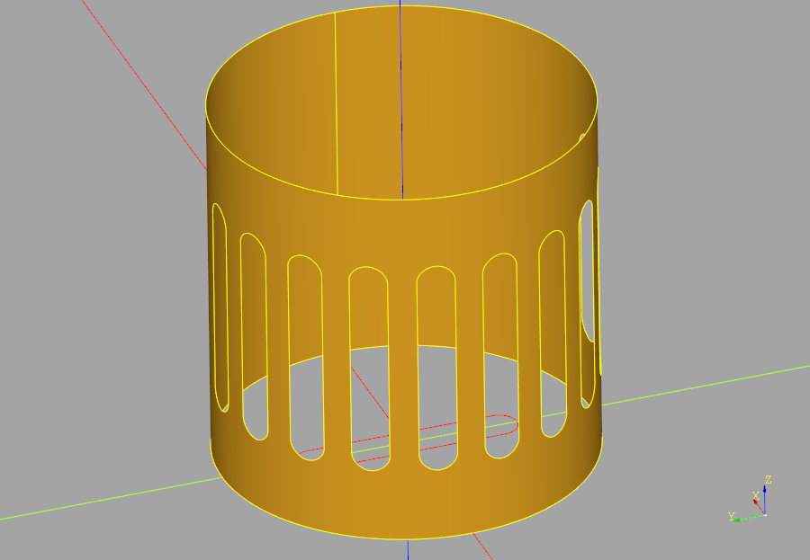
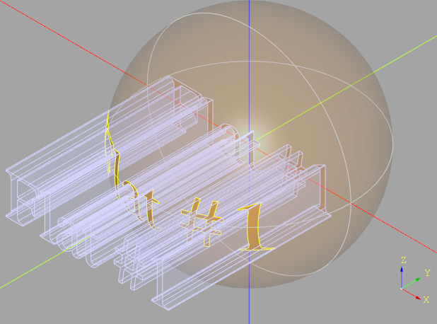
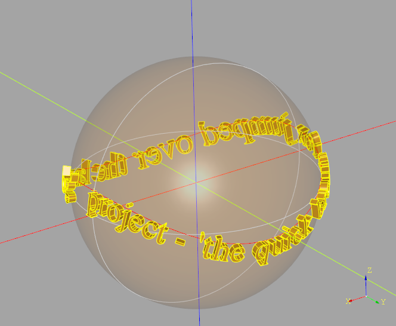
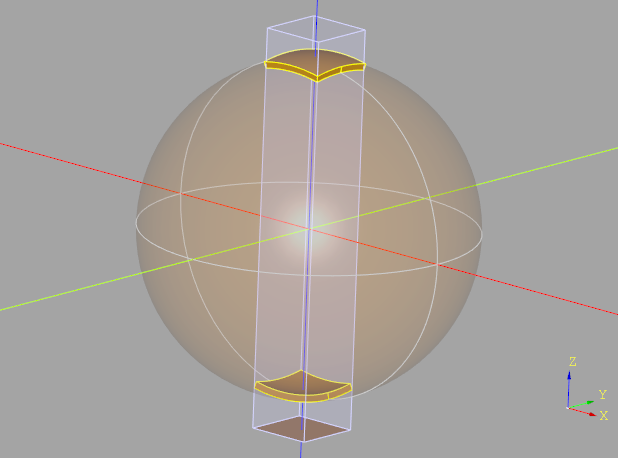

Direct API Reference
The Direct API is an interface layer between the primary user interface API (the Builders) and the OpenCascade (OCCT) API. This API is based on the CadQuery Direct API (thank you to all of the CadQuery contributors that made this possible) with the following major changes:
PEP8 compliance
New Axis class
New ShapeList class enabling sorting and filtering of shape objects
Literal strings replaced with Enums
Geometric Objects
The geometric classes defined by build123d are defined below. This parameters to the CAD objects described in the following section are frequently of these types.
digraph inheritance6a9b0cc043 { bgcolor=transparent; rankdir=LR; size="8.0, 12.0"; "Axis" [URL="#geometry.Axis",fillcolor=white,fontname="Vera Sans, DejaVu Sans, Liberation Sans, Arial, Helvetica, sans",fontsize=10,height=0.25,shape=box,style="setlinewidth(0.5),filled",target="_top",tooltip="Axis"]; "AxisMeta" [fillcolor=white,fontname="Vera Sans, DejaVu Sans, Liberation Sans, Arial, Helvetica, sans",fontsize=10,height=0.25,shape=box,style="setlinewidth(0.5),filled",tooltip="Axis meta class to enable class properties"]; "BoundBox" [URL="#geometry.BoundBox",fillcolor=white,fontname="Vera Sans, DejaVu Sans, Liberation Sans, Arial, Helvetica, sans",fontsize=10,height=0.25,shape=box,style="setlinewidth(0.5),filled",target="_top",tooltip="A BoundingBox for a Shape"]; "Color" [URL="#geometry.Color",fillcolor=white,fontname="Vera Sans, DejaVu Sans, Liberation Sans, Arial, Helvetica, sans",fontsize=10,height=0.25,shape=box,style="setlinewidth(0.5),filled",target="_top",tooltip="Color object based on OCCT Quantity_ColorRGBA."]; "GeomEncoder" [fillcolor=white,fontname="Vera Sans, DejaVu Sans, Liberation Sans, Arial, Helvetica, sans",fontsize=10,height=0.25,shape=box,style="setlinewidth(0.5),filled",tooltip="A JSON encoder for build123d geometry objects."]; "JSONEncoder" -> "GeomEncoder" [arrowsize=0.5,style="setlinewidth(0.5)"]; "JSONEncoder" [fillcolor=white,fontname="Vera Sans, DejaVu Sans, Liberation Sans, Arial, Helvetica, sans",fontsize=10,height=0.25,shape=box,style="setlinewidth(0.5),filled",tooltip="Extensible JSON <https://json.org> encoder for Python data structures."]; "Location" [URL="#geometry.Location",fillcolor=white,fontname="Vera Sans, DejaVu Sans, Liberation Sans, Arial, Helvetica, sans",fontsize=10,height=0.25,shape=box,style="setlinewidth(0.5),filled",target="_top",tooltip="Location in 3D space. Depending on usage can be absolute or relative."]; "LocationEncoder" [URL="#geometry.LocationEncoder",fillcolor=white,fontname="Vera Sans, DejaVu Sans, Liberation Sans, Arial, Helvetica, sans",fontsize=10,height=0.25,shape=box,style="setlinewidth(0.5),filled",target="_top",tooltip="Custom JSON Encoder for Location values"]; "JSONEncoder" -> "LocationEncoder" [arrowsize=0.5,style="setlinewidth(0.5)"]; "Matrix" [URL="#geometry.Matrix",fillcolor=white,fontname="Vera Sans, DejaVu Sans, Liberation Sans, Arial, Helvetica, sans",fontsize=10,height=0.25,shape=box,style="setlinewidth(0.5),filled",target="_top",tooltip="A 3d , 4x4 transformation matrix."]; "OrientedBoundBox" [fillcolor=white,fontname="Vera Sans, DejaVu Sans, Liberation Sans, Arial, Helvetica, sans",fontsize=10,height=0.25,shape=box,style="setlinewidth(0.5),filled",tooltip="An Oriented Bounding Box"]; "Plane" [URL="#geometry.Plane",fillcolor=white,fontname="Vera Sans, DejaVu Sans, Liberation Sans, Arial, Helvetica, sans",fontsize=10,height=0.25,shape=box,style="setlinewidth(0.5),filled",target="_top",tooltip="Plane"]; "PlaneMeta" [fillcolor=white,fontname="Vera Sans, DejaVu Sans, Liberation Sans, Arial, Helvetica, sans",fontsize=10,height=0.25,shape=box,style="setlinewidth(0.5),filled",tooltip="Plane meta class to enable class properties"]; "Pos" [URL="#geometry.Pos",fillcolor=white,fontname="Vera Sans, DejaVu Sans, Liberation Sans, Arial, Helvetica, sans",fontsize=10,height=0.25,shape=box,style="setlinewidth(0.5),filled",target="_top",tooltip="A position only sub-class of Location"]; "Location" -> "Pos" [arrowsize=0.5,style="setlinewidth(0.5)"]; "Rotation" [URL="#geometry.Rotation",fillcolor=white,fontname="Vera Sans, DejaVu Sans, Liberation Sans, Arial, Helvetica, sans",fontsize=10,height=0.25,shape=box,style="setlinewidth(0.5),filled",target="_top",tooltip="Subclass of Location used only for object rotation"]; "Location" -> "Rotation" [arrowsize=0.5,style="setlinewidth(0.5)"]; "Vector" [URL="#geometry.Vector",fillcolor=white,fontname="Vera Sans, DejaVu Sans, Liberation Sans, Arial, Helvetica, sans",fontsize=10,height=0.25,shape=box,style="setlinewidth(0.5),filled",target="_top",tooltip="Create a 3-dimensional vector"]; }- class Axis(*args, **kwargs)
Axis defined by point and direction
- Parameters:
origin (VectorLike) – start point
direction (VectorLike) – direction
edge (Edge) – origin & direction defined by start of edge
- Variables:
- angle_between(other: Axis) float
calculate angle between axes
Computes the angular value, in degrees, between the direction of self and other between 0° and 360°.
- Parameters:
other (Axis) – axis to compare to
- Returns:
angle between axes
- Return type:
float
- property direction
- intersect(*args, **kwargs)
- is_coaxial(other: Axis, angular_tolerance: float = 1e-05, linear_tolerance: float = 1e-05) bool
are axes coaxial
True if the angle between self and other is lower or equal to angular_tolerance and the distance between self and other is lower or equal to linear_tolerance.
- Parameters:
other (Axis) – axis to compare to
angular_tolerance (float, optional) – max angular deviation. Defaults to 1e-5.
linear_tolerance (float, optional) – max linear deviation. Defaults to 1e-5.
- Returns:
axes are coaxial
- Return type:
bool
- is_normal(other: Axis, angular_tolerance: float = 1e-05) bool
are axes normal
Returns True if the direction of this and another axis are normal to each other. That is, if the angle between the two axes is equal to 90° within the angular_tolerance.
- Parameters:
other (Axis) – axis to compare to
angular_tolerance (float, optional) – max angular deviation. Defaults to 1e-5.
- Returns:
axes are normal
- Return type:
bool
- is_opposite(other: Axis, angular_tolerance: float = 1e-05) bool
are axes opposite
Returns True if the direction of this and another axis are parallel with opposite orientation. That is, if the angle between the two axes is equal to 180° within the angular_tolerance.
- Parameters:
other (Axis) – axis to compare to
angular_tolerance (float, optional) – max angular deviation. Defaults to 1e-5.
- Returns:
axes are opposite
- Return type:
bool
- is_parallel(other: Axis, angular_tolerance: float = 1e-05) bool
are axes parallel
Returns True if the direction of this and another axis are parallel with same orientation or opposite orientation. That is, if the angle between the two axes is equal to 0° or 180° within the angular_tolerance.
- Parameters:
other (Axis) – axis to compare to
angular_tolerance (float, optional) – max angular deviation. Defaults to 1e-5.
- Returns:
axes are parallel
- Return type:
bool
- is_skew(other: Axis, tolerance: float = 1e-05) bool
are axes skew
Returns True if this axis and another axis are skew, meaning they are neither parallel nor coplanar. Two axes are skew if they do not lie in the same plane and never intersect.
Mathematically, this means: - The axes are not parallel (the cross product of their direction vectors
is nonzero).
The axes are not coplanar (the vector between their positions is not aligned with the plane spanned by their directions).
If either condition is false (i.e., the axes are parallel or coplanar), they are not skew.
- Parameters:
other (Axis) – axis to compare to
tolerance (float, optional) – max deviation. Defaults to 1e-5.
- Returns:
axes are skew
- Return type:
bool
- located(new_location: Location)
relocates self to a new location possibly changing position and direction
- property position
- class BoundBox(bounding_box: Bnd_Box)
A BoundingBox for a Shape
- add(obj: tuple[float, float, float] | Vector | BoundBox, tol: float | None = None) BoundBox
Returns a modified (expanded) bounding box
- obj can be one of several things:
a 3-tuple corresponding to x,y, and z amounts to add
a vector, containing the x,y,z values to add
another bounding box, where a new box will be created that encloses both.
This bounding box is not changed.
- Parameters:
obj – tuple[float, float, float] | Vector | BoundBox]:
tol – float: (Default value = None)
Returns:
- property diagonal: float
body diagonal length (i.e. object maximum size)
- static find_outside_box_2d(bb1: BoundBox, bb2: BoundBox) BoundBox | None
Compares bounding boxes
Compares bounding boxes. Returns none if neither is inside the other. Returns the outer one if either is outside the other.
BoundBox.is_inside works in 3d, but this is a 2d bounding box, so it doesn’t work correctly plus, there was all kinds of rounding error in the built-in implementation i do not understand.
- Parameters:
bb1 – BoundBox:
bb2 – BoundBox:
Returns:
- classmethod from_topo_ds(shape: TopoDS_Shape, tolerance: float | None = None, optimal: bool = True, oriented: bool = False) BoundBox
Constructs a bounding box from a TopoDS_Shape
- Parameters:
shape – TopoDS_Shape:
tolerance – float: (Default value = None)
optimal – bool: This algorithm builds precise bounding box (Default value = True)
Returns:
- class Color(*args, **kwargs)
Color object based on OCCT Quantity_ColorRGBA.
- Variables:
wrapped (Quantity_ColorRGBA) – the OCP color object
- to_tuple()
Value as tuple
- class Location(*args)
Location in 3D space. Depending on usage can be absolute or relative.
This class wraps the TopLoc_Location class from OCCT. It can be used to move Shape objects in both relative and absolute manner. It is the preferred type to locate objects in build123d.
- Variables:
wrapped (TopLoc_Location) – the OCP location object
- __eq__(other: object) bool
Compare Locations
- __mul__(other: Shape | Location | Iterable[Location]) Shape | Location | list[Location]
Combine locations
- intersect(*args, **kwargs)
- property orientation: Vector
Extract orientation/rotation component of self
- Returns:
orientation part of Location
- Return type:
- property position: Vector
Extract Position component of self
- Returns:
Position part of Location
- Return type:
- to_tuple() tuple[tuple[float, float, float], tuple[float, float, float]]
Convert the location to a translation, rotation tuple.
- class LocationEncoder(*, skipkeys=False, ensure_ascii=True, check_circular=True, allow_nan=True, sort_keys=False, indent=None, separators=None, default=None)
Custom JSON Encoder for Location values
Example:
data_dict = { "part1": { "joint_one": Location((1, 2, 3), (4, 5, 6)), "joint_two": Location((7, 8, 9), (10, 11, 12)), }, "part2": { "joint_one": Location((13, 14, 15), (16, 17, 18)), "joint_two": Location((19, 20, 21), (22, 23, 24)), }, } json_object = json.dumps(data_dict, indent=4, cls=LocationEncoder) with open("sample.json", "w") as outfile: outfile.write(json_object) with open("sample.json", "r") as infile: copy_data_dict = json.load(infile, object_hook=LocationEncoder.location_hook)
- static location_hook(obj) dict
Convert Locations loaded from json to Location objects
Example
read_json = json.load(infile, object_hook=LocationEncoder.location_hook)
- class Pos(*args, **kwargs)
A position only sub-class of Location
- class Matrix(*args, **kwargs)
A 3d , 4x4 transformation matrix.
Used to move geometry in space.
The provided “matrix” parameter may be None, a gp_GTrsf, or a nested list of values.
If given a nested list, it is expected to be of the form:
- [[m11, m12, m13, m14],
[m21, m22, m23, m24], [m31, m32, m33, m34]]
A fourth row may be given, but it is expected to be: [0.0, 0.0, 0.0, 1.0] since this is a transform matrix.
- Variables:
wrapped (gp_GTrsf) – the OCP transformation function
- multiply(other)
Matrix multiplication
- transposed_list() Sequence[float]
Needed by the cqparts gltf exporter
- class Plane(*args, **kwargs)
A plane is positioned in space with a coordinate system such that the plane is defined by the origin, x_dir (X direction), y_dir (Y direction), and z_dir (Z direction) of this coordinate system, which is the “local coordinate system” of the plane. The z_dir is a vector normal to the plane. The coordinate system is right-handed.
A plane allows the use of local 2D coordinates, which are later converted to global, 3d coordinates when the operations are complete.
Planes can be created from faces as workplanes for feature creation on objects.
Name
x_dir
y_dir
z_dir
XY
+x
+y
+z
YZ
+y
+z
+x
ZX
+z
+x
+y
XZ
+x
+z
-y
YX
+y
+x
-z
ZY
+z
+y
-x
front
+x
+z
-y
back
-x
+z
+y
left
-y
+z
-x
right
+y
+z
+x
top
+x
+y
+z
bottom
+x
-y
-z
isometric
+x+y
-x+y+z
+x+y-z
- Parameters:
gp_pln (gp_Pln) – an OCCT plane object
origin (tuple[float, float, float] | Vector) – the origin in global coordinates
x_dir (tuple[float, float, float] | Vector | None) – an optional vector representing the X Direction. Defaults to None.
z_dir (tuple[float, float, float] | Vector | None) – the normal direction for the plane. Defaults to (0, 0, 1).
- Variables:
origin (Vector) – global position of local (0,0,0) point
x_dir (Vector) – x direction
y_dir (Vector) – y direction
z_dir (Vector) – z direction
local_coord_system (gp_Ax3) – OCP coordinate system
forward_transform (Matrix) – forward location transformation matrix
reverse_transform (Matrix) – reverse location transformation matrix
wrapped (gp_Pln) – the OCP plane object
- Raises:
ValueError – z_dir must be non null
ValueError – x_dir must be non null
ValueError – the specified x_dir is not orthogonal to the provided normal
- Returns:
A plane
- Return type:
- __eq__(other: object)
Are planes equal operator ==
- contains(obj: Vector | tuple[float, float] | tuple[float, float, float] | Sequence[float] | Axis, tolerance: float = 1e-06) bool
Is this point or Axis fully contained in this plane?
- Parameters:
obj (VectorLike | Axis) – point or Axis to evaluate
tolerance (float, optional) – comparison tolerance. Defaults to TOLERANCE.
- Returns:
self contains point or Axis
- Return type:
bool
- from_local_coords(obj: tuple | Vector | Any | BoundBox)
Reposition the object relative from this plane
- Parameters:
obj – VectorLike | Shape | BoundBox an object to reposition. Note that
classes. (type Any refers to all topological)
- Returns:
an object of the same type, but repositioned to world coordinates
- static get_topods_face_normal(face: TopoDS_Face) Vector
Find the normal at the center of a TopoDS_Face
- intersect(*args, **kwargs)
- location_between(other: Plane) Location
Return a location representing the translation from self to other
- move(loc: Location) Plane
Change the position & orientation of self by applying a relative location
- rotated(rotation: Vector | tuple[float, float] | tuple[float, float, float] | Sequence[float] = (0, 0, 0), ordering: Extrinsic | Intrinsic | None = None) Plane
Returns a copy of this plane, rotated about the specified axes
Since the z axis is always normal the plane, rotating around Z will always produce a plane that is parallel to this one.
The origin of the workplane is unaffected by the rotation.
Rotations are done in order x, y, z. If you need a different order, manually chain together multiple rotate() commands.
- Parameters:
rotation (VectorLike, optional) – (xDegrees, yDegrees, zDegrees). Defaults to (0, 0, 0).
ordering (Intrinsic | Extrinsic, optional) – order of rotations in Intrinsic or Extrinsic rotation mode, defaults to Intrinsic.XYZ
- Returns:
a copy of this plane rotated as requested.
- Return type:
- shift_origin(locator: Axis | VectorLike | Vertex) Plane
shift plane origin
Creates a new plane with the origin moved within the plane to the point of intersection of the axis or at the given Vertex. The plane’s x_dir and z_dir are unchanged.
- to_gp_ax2() gp_Ax2
Return gp_Ax2 version of the plane
- to_local_coords(obj: Vector | tuple[float, float] | tuple[float, float, float] | Sequence[float] | Any | BoundBox)
Reposition the object relative to this plane
- Parameters:
obj – VectorLike | Shape | BoundBox an object to reposition. Note that
classes. (type Any refers to all topological)
- Returns:
an object of the same type, but repositioned to local coordinates
- class Rotation(*args, **kwargs)
Subclass of Location used only for object rotation
- Variables:
X (float) – rotation in degrees about X axis
Y (float) – rotation in degrees about Y axis
Z (float) – rotation in degrees about Z axis
enums, (optionally specify rotation ordering with Intrinsic or Extrinsic) – defaults to Intrinsic.XYZ
- class Vector(*args, **kwargs)
Create a 3-dimensional vector
- Parameters:
x (float) – x component
y (float) – y component
z (float) – z component
vec (Vector | Sequence(float) | gp_Vec | gp_Pnt | gp_Dir | gp_XYZ) – vector representations
Note that if no z value is provided it’s assumed to be zero. If no values are provided the returned Vector has the value of 0, 0, 0.
- Variables:
wrapped (gp_Vec) – the OCP vector object
- property X: float
Get x value
- property Y: float
Get y value
- property Z: float
Get z value
- __abs__() float
Vector length operator abs()
- __add__(vec: Vector | tuple[float, float] | tuple[float, float, float] | Sequence[float]) Vector
Mathematical addition operator +
- __eq__(other: object) bool
Vectors equal operator ==
- __sub__(vec: Vector | tuple[float, float] | tuple[float, float, float] | Sequence[float]) Vector
Mathematical subtraction operator -
- add(vec: Vector | tuple[float, float] | tuple[float, float, float] | Sequence[float]) Vector
Mathematical addition function
- center() Vector
- Returns:
The center of myself is myself. Provided so that vectors, vertices, and other shapes all support a common interface, when center() is requested for all objects on the stack.
- get_signed_angle(vec: Vector, normal: Vector | None = None) float
Signed Angle Between Vectors
Return the signed angle in degrees between two vectors with the given normal based on this math: angle = atan2((Va × Vb) ⋅ Vn, Va ⋅ Vb)
- intersect(*args, **kwargs)
- property length: float
Vector length
- project_to_line(line: Vector) Vector
Returns a new vector equal to the projection of this Vector onto the line represented by Vector <line>
- project_to_plane(plane: Plane) Vector
Vector is projected onto the plane provided as input.
- Parameters:
args – Plane object
- Returns the projected vector.
plane: Plane:
Returns:
- rotate(axis: Axis, angle: float) Vector
Rotate about axis
Rotate about the given Axis by an angle in degrees
- sub(vec: Vector | tuple[float, float] | tuple[float, float, float] | Sequence[float]) Vector
Mathematical subtraction function
- to_dir() gp_Dir
Convert to OCCT gp_Dir object
- to_pnt() gp_Pnt
Convert to OCCT gp_Pnt object
- to_tuple() tuple[float, float, float]
Return tuple equivalent
- property wrapped: gp_Vec
OCCT object
Topological Objects
The topological object classes defined by build123d are defined below.
Note that the Mixin1D and Mixin3D classes add
supplementary functionality specific to 1D
(Edge and Wire) and 3D (Compound and
~topology.Solid) objects respectively.
Note that a Compound may be contain only 1D, 2D (Face) or 3D objects.
- class Compound(obj: TopoDS_Compound | Iterable[Shape] | None = None, label: str = '', color: Color | None = None, material: str = '', joints: dict[str, Joint] | None = None, parent: Compound | None = None, children: Sequence[Shape] | None = None)[source]
A Compound in build123d is a topological entity representing a collection of geometric shapes grouped together within a single structure. It serves as a container for organizing diverse shapes like edges, faces, or solids. This hierarchical arrangement facilitates the construction of complex models by combining simpler shapes. Compound plays a pivotal role in managing the composition and structure of intricate 3D models in computer-aided design (CAD) applications, allowing engineers and designers to work with assemblies of shapes as unified entities for efficient modeling and analysis.
- classmethod cast(obj: TopoDS_Shape) Vertex | Edge | Wire | Face | Shell | Solid | Compound[source]
Returns the right type of wrapper, given a OCCT object
- center(center_of: ~build123d.build_enums.CenterOf = <CenterOf.MASS>) Vector[source]
Return center of object
Find center of object
- do_children_intersect(include_parent: bool = False, tolerance: float = 1e-05) tuple[bool, tuple[Shape | None, Shape | None], float][source]
Do Children Intersect
Determine if any of the child objects within a Compound/assembly intersect by intersecting each of the shapes with each other and checking for a common volume.
- Parameters:
include_parent (bool, optional) – check parent for intersections. Defaults to False.
tolerance (float, optional) – maximum allowable volume difference. Defaults to 1e-5.
- Returns:
do the object intersect, intersecting objects, volume of intersection
- Return type:
- classmethod extrude(obj: Shell, direction: Vector | tuple[float, float] | tuple[float, float, float] | Sequence[float]) Compound[source]
Extrude a Shell into a Compound.
- Parameters:
direction (VectorLike) – direction and magnitude of extrusion
- Raises:
ValueError – Unsupported class
RuntimeError – Generated invalid result
- Returns:
extruded shape
- Return type:
- get_type(obj_type: type[Vertex] | type[Edge] | type[Face] | type[Shell] | type[Solid] | type[Wire]) list[Vertex | Edge | Face | Shell | Solid | Wire][source]
Extract the objects of the given type from a Compound. Note that this isn’t the same as Faces() etc. which will extract Faces from Solids.
- classmethod make_text(txt: str, font_size: float, font: str = 'Arial', font_path: str | None = None, font_style: ~build123d.build_enums.FontStyle = <FontStyle.REGULAR>, align: ~build123d.build_enums.Align | tuple[~build123d.build_enums.Align, ~build123d.build_enums.Align] | None = (<Align.CENTER>, <Align.CENTER>), position_on_path: float = 0.0, text_path: ~topology.one_d.Edge | ~topology.one_d.Wire | None = None) Compound[source]
2D Text that optionally follows a path.
The text that is created can be combined as with other sketch features by specifying a mode or rotated by the given angle. In addition, edges have been previously created with arc or segment, the text will follow the path defined by these edges. The start parameter can be used to shift the text along the path to achieve precise positioning.
- Parameters:
txt – text to be rendered
font_size – size of the font in model units
font – font name
font_path – path to font file
font_style – text style. Defaults to FontStyle.REGULAR.
align (Union[Align, tuple[Align, Align]], optional) – align min, center, or max of object. Defaults to (Align.CENTER, Align.CENTER).
position_on_path – the relative location on path to position the text, between 0.0 and 1.0. Defaults to 0.0.
text_path – a path for the text to follows. Defaults to None - linear text.
- Returns:
a Compound object containing multiple Faces representing the text
Examples:
fox = Compound.make_text( txt="The quick brown fox jumped over the lazy dog", font_size=10, position_on_path=0.1, text_path=jump_edge, )
- classmethod make_triad(axes_scale: float) Compound[source]
The coordinate system triad (X, Y, Z axes)
- order = 4.0
- project_to_viewport(viewport_origin: Vector | tuple[float, float] | tuple[float, float, float] | Sequence[float], viewport_up: Vector | tuple[float, float] | tuple[float, float, float] | Sequence[float] = (0, 0, 1), look_at: Vector | tuple[float, float] | tuple[float, float, float] | Sequence[float] | None = None) tuple[ShapeList[Edge], ShapeList[Edge]]
Project a shape onto a viewport returning visible and hidden Edges.
- Parameters:
viewport_origin (VectorLike) – location of viewport
viewport_up (VectorLike, optional) – direction of the viewport y axis. Defaults to (0, 0, 1).
look_at (VectorLike, optional) – point to look at. Defaults to None (center of shape).
- Returns:
visible & hidden Edges
- Return type:
- unwrap(fully: bool = True) Self | Shape[source]
Strip unnecessary Compound wrappers
- Parameters:
fully (bool, optional) – return base shape without any Compound wrappers (otherwise one Compound is left). Defaults to True.
- Returns:
base shape
- Return type:
Union[Self, Shape]
- property volume: float
volume - the volume of this Compound
- class Edge(obj: TopoDS_Edge | Axis | None | None = None, label: str = '', color: Color | None = None, parent: Compound | None = None)[source]
An Edge in build123d is a fundamental element in the topological data structure representing a one-dimensional geometric entity within a 3D model. It encapsulates information about a curve, which could be a line, arc, or other parametrically defined shape. Edge is crucial in for precise modeling and manipulation of curves, facilitating operations like filleting, chamfering, and Boolean operations. It serves as a building block for constructing complex structures, such as wires and faces.
- property arc_center: Vector
center of an underlying circle or ellipse geometry.
- distribute_locations(count: int, start: float = 0.0, stop: float = 1.0, positions_only: bool = False) list[Location][source]
Distribute Locations
Distribute locations along edge or wire.
- Parameters:
self – Wire:Edge:
count (int) – Number of locations to generate
start (float) – position along Edge|Wire to start. Defaults to 0.0.
stop (float) – position along Edge|Wire to end. Defaults to 1.0.
positions_only (bool) – only generate position not orientation. Defaults to False.
- Returns:
locations distributed along Edge|Wire
- Return type:
list[Location]
- Raises:
ValueError – count must be two or greater
- classmethod extrude(obj: Vertex, direction: Vector | tuple[float, float] | tuple[float, float, float] | Sequence[float]) Edge[source]
Extrude a Vertex into an Edge.
- Parameters:
direction (VectorLike) – direction and magnitude of extrusion
- Raises:
ValueError – Unsupported class
RuntimeError – Generated invalid result
- Returns:
extruded shape
- Return type:
- find_intersection_points(other: Axis | Edge | None = None, tolerance: float = 1e-06) ShapeList[Vector][source]
Determine the points where a 2D edge crosses itself or another 2D edge
- find_tangent(angle: float) list[float][source]
Find the parameter values of self where the tangent is equal to angle.
- Parameters:
angle (float) – target angle in degrees
- Returns:
u values between 0.0 and 1.0
- Return type:
list[float]
- intersect(*to_intersect: Edge | Axis | Plane) None | Vertex | Edge | ShapeList[Vertex | Edge][source]
intersect Edge with Edge or Axis
- classmethod make_bezier(*cntl_pnts: Vector | tuple[float, float] | tuple[float, float, float] | Sequence[float], weights: list[float] | None = None) Edge[source]
Create a rational (with weights) or non-rational bezier curve. The first and last control points represent the start and end of the curve respectively. If weights are provided, there must be one provided for each control point.
- Parameters:
cntl_pnts (sequence[VectorLike]) – points defining the curve
weights (list[float], optional) – control point weights list. Defaults to None.
- Raises:
ValueError – Too few control points
ValueError – Too many control points
ValueError – A weight is required for each control point
- Returns:
bezier curve
- Return type:
- classmethod make_circle(radius: float, plane: ~build123d.geometry.Plane = Plane(o=(0.00, 0.00, 0.00), x=(1.00, 0.00, 0.00), z=(0.00, 0.00, 1.00)), start_angle: float = 360.0, end_angle: float = 360, angular_direction: ~build123d.build_enums.AngularDirection = <AngularDirection.COUNTER_CLOCKWISE>) Edge[source]
make circle
Create a circle centered on the origin of plane
- Parameters:
radius (float) – circle radius
plane (Plane, optional) – base plane. Defaults to Plane.XY.
start_angle (float, optional) – start of arc angle. Defaults to 360.0.
end_angle (float, optional) – end of arc angle. Defaults to 360.
angular_direction (AngularDirection, optional) – arc direction. Defaults to AngularDirection.COUNTER_CLOCKWISE.
- Returns:
full or partial circle
- Return type:
- classmethod make_ellipse(x_radius: float, y_radius: float, plane: ~build123d.geometry.Plane = Plane(o=(0.00, 0.00, 0.00), x=(1.00, 0.00, 0.00), z=(0.00, 0.00, 1.00)), start_angle: float = 360.0, end_angle: float = 360.0, angular_direction: ~build123d.build_enums.AngularDirection = <AngularDirection.COUNTER_CLOCKWISE>) Edge[source]
make ellipse
Makes an ellipse centered at the origin of plane.
- Parameters:
x_radius (float) – x radius of the ellipse (along the x-axis of plane)
y_radius (float) – y radius of the ellipse (along the y-axis of plane)
plane (Plane, optional) – base plane. Defaults to Plane.XY.
start_angle (float, optional) – Defaults to 360.0.
end_angle (float, optional) – Defaults to 360.0.
angular_direction (AngularDirection, optional) – arc direction. Defaults to AngularDirection.COUNTER_CLOCKWISE.
- Returns:
full or partial ellipse
- Return type:
- classmethod make_helix(pitch: float, height: float, radius: float, center: Vector | tuple[float, float] | tuple[float, float, float] | Sequence[float] = (0, 0, 0), normal: Vector | tuple[float, float] | tuple[float, float, float] | Sequence[float] = (0, 0, 1), angle: float = 0.0, lefthand: bool = False) Wire[source]
Make a helix with a given pitch, height and radius. By default a cylindrical surface is used to create the helix. If the :angle: is set (the apex given in degree) a conical surface is used instead.
- Parameters:
pitch (float) – distance per revolution along normal
height (float) – total height
radius (float)
center (VectorLike, optional) – Defaults to (0, 0, 0).
normal (VectorLike, optional) – Defaults to (0, 0, 1).
angle (float, optional) – conical angle. Defaults to 0.0.
lefthand (bool, optional) – Defaults to False.
- Returns:
helix
- Return type:
- classmethod make_line(point1: Vector | tuple[float, float] | tuple[float, float, float] | Sequence[float], point2: Vector | tuple[float, float] | tuple[float, float, float] | Sequence[float]) Edge[source]
Create a line between two points
- Parameters:
point1 – VectorLike: that represents the first point
point2 – VectorLike: that represents the second point
- Returns:
A linear edge between the two provided points
- classmethod make_mid_way(first: Edge, second: Edge, middle: float = 0.5) Edge[source]
make line between edges
Create a new linear Edge between the two provided Edges. If the Edges are parallel but in the opposite directions one Edge is flipped such that the mid way Edge isn’t truncated.
- classmethod make_spline(points: list[Vector | tuple[float, float] | tuple[float, float, float] | Sequence[float]], tangents: list[Vector | tuple[float, float] | tuple[float, float, float] | Sequence[float]] | None = None, periodic: bool = False, parameters: list[float] | None = None, scale: bool = True, tol: float = 1e-06) Edge[source]
Spline
Interpolate a spline through the provided points.
- Parameters:
points (list[VectorLike]) – the points defining the spline
tangents (list[VectorLike], optional) – start and finish tangent. Defaults to None.
periodic (bool, optional) – creation of periodic curves. Defaults to False.
parameters (list[float], optional) – the value of the parameter at each interpolation point. (The interpolated curve is represented as a vector-valued function of a scalar parameter.) If periodic == True, then len(parameters) must be len(interpolation points) + 1, otherwise len(parameters) must be equal to len(interpolation points). Defaults to None.
scale (bool, optional) – whether to scale the specified tangent vectors before interpolating. Each tangent is scaled, so it’s length is equal to the derivative of the Lagrange interpolated curve. I.e., set this to True, if you want to use only the direction of the tangent vectors specified by tangents , but not their magnitude. Defaults to True.
tol (float, optional) – tolerance of the algorithm (consult OCC documentation). Used to check that the specified points are not too close to each other, and that tangent vectors are not too short. (In either case interpolation may fail.). Defaults to 1e-6.
- Raises:
ValueError – Parameter for each interpolation point
ValueError – Tangent for each interpolation point
ValueError – B-spline interpolation failed
- Returns:
the spline
- Return type:
- classmethod make_spline_approx(points: list[Vector | tuple[float, float] | tuple[float, float, float] | Sequence[float]], tol: float = 0.001, smoothing: tuple[float, float, float] | None = None, min_deg: int = 1, max_deg: int = 6) Edge[source]
Approximate a spline through the provided points.
- Parameters:
points (list[Vector])
tol (float, optional) – tolerance of the algorithm. Defaults to 1e-3.
smoothing (Tuple[float, float, float], optional) – optional tuple of 3 weights use for variational smoothing. Defaults to None.
min_deg (int, optional) – minimum spline degree. Enforced only when smoothing is None. Defaults to 1.
max_deg (int, optional) – maximum spline degree. Defaults to 6.
- Raises:
ValueError – B-spline approximation failed
- Returns:
spline
- Return type:
- classmethod make_tangent_arc(start: Vector | tuple[float, float] | tuple[float, float, float] | Sequence[float], tangent: Vector | tuple[float, float] | tuple[float, float, float] | Sequence[float], end: Vector | tuple[float, float] | tuple[float, float, float] | Sequence[float]) Edge[source]
Tangent Arc
Makes a tangent arc from point start, in the direction of tangent and ends at end.
- Parameters:
start (VectorLike) – start point
tangent (VectorLike) – start tangent
end (VectorLike) – end point
- Returns:
circular arc
- Return type:
- classmethod make_three_point_arc(point1: Vector | tuple[float, float] | tuple[float, float, float] | Sequence[float], point2: Vector | tuple[float, float] | tuple[float, float, float] | Sequence[float], point3: Vector | tuple[float, float] | tuple[float, float, float] | Sequence[float]) Edge[source]
Three Point Arc
Makes a three point arc through the provided points
- Parameters:
point1 (VectorLike) – start point
point2 (VectorLike) – middle point
point3 (VectorLike) – end point
- Returns:
a circular arc through the three points
- Return type:
- order = 1.0
- param_at_point(point: Vector | tuple[float, float] | tuple[float, float, float] | Sequence[float]) float[source]
Normalized parameter at point along Edge
- project_to_shape(target_object: Shape, direction: Vector | tuple[float, float] | tuple[float, float, float] | Sequence[float] | None = None, center: Vector | tuple[float, float] | tuple[float, float, float] | Sequence[float] | None = None) list[Edge][source]
Project Edge
Project an Edge onto a Shape generating new wires on the surfaces of the object one and only one of direction or center must be provided. Note that one or more wires may be generated depending on the topology of the target object and location/direction of projection.
To avoid flipping the normal of a face built with the projected wire the orientation of the output wires are forced to be the same as self.
- Parameters:
target_object – Object to project onto
direction – Parallel projection direction. Defaults to None.
center – Conical center of projection. Defaults to None.
target_object – Shape:
direction – VectorLike: (Default value = None)
center – VectorLike: (Default value = None)
- Returns:
Projected Edge(s)
- Raises:
ValueError – Only one of direction or center must be provided
- class Face(obj: TopoDS_Face, label: str = '', color: Color | None = None, parent: Compound | None = None)[source]
- class Face(outer_wire: Wire, inner_wires: Iterable[Wire] | None = None, label: str = '', color: Color | None = None, parent: Compound | None = None)
A Face in build123d represents a 3D bounded surface within the topological data structure. It encapsulates geometric information, defining a face of a 3D shape. These faces are integral components of complex structures, such as solids and shells. Face enables precise modeling and manipulation of surfaces, supporting operations like trimming, filleting, and Boolean operations.
- property area_without_holes: float
Calculate the total surface area of the face, including the areas of any holes.
This property returns the overall area of the face as if the inner boundaries (holes) were filled in.
- Returns:
The total surface area, including the area of holes. Returns 0.0 if the face is empty.
- Return type:
float
- property axes_of_symmetry: list[Axis]
Computes and returns the axes of symmetry for a planar face.
The method determines potential symmetry axes by analyzing the face’s geometry: - It first validates that the face is non-empty and planar. - For faces with inner wires (holes), it computes the centroid of the
- holes and the face’s overall center (COG).
If the holes’ centroid significantly deviates from the COG (beyond a specified tolerance), the symmetry axis is taken along the line connecting these points; otherwise, each hole’s center is used to generate a candidate axis.
For faces without holes, candidate directions are derived by sampling midpoints along the outer wire’s edges.
If curved edges are present, additional candidate directions are obtained from an oriented bounding box (OBB) constructed around the face.
For each candidate direction, the face is split by a plane (defined using the candidate direction and the face’s normal). The top half of the face is then mirrored across this plane, and if the area of the intersection between the mirrored half and the bottom half matches the bottom half’s area within a small tolerance, the direction is accepted as an axis of symmetry.
- Returns:
- A list of Axis objects, each defined by the face’s
center and a direction vector, representing the symmetry axes of the face.
- Return type:
list[Axis]
- Raises:
ValueError – If the face or its underlying representation is empty.
ValueError – If the face is not planar.
- property axis_of_rotation: None | Axis
Get the rotational axis of a cylinder or torus
- center(center_of: ~build123d.build_enums.CenterOf = <CenterOf.GEOMETRY>) Vector[source]
Center of Face
Return the center based on center_of
- property center_location: Location
Location at the center of face
- chamfer_2d(distance: float, distance2: float, vertices: Iterable[Vertex], edge: Edge | None = None) Face[source]
Apply 2D chamfer to a face
- Parameters:
- Raises:
ValueError – Cannot chamfer at this location
ValueError – One or more vertices are not part of edge
- Returns:
face with a chamfered corner(s)
- Return type:
- classmethod extrude(obj: Edge, direction: Vector | tuple[float, float] | tuple[float, float, float] | Sequence[float]) Face[source]
Extrude an Edge into a Face.
- Parameters:
direction (VectorLike) – direction and magnitude of extrusion
- Raises:
ValueError – Unsupported class
RuntimeError – Generated invalid result
- Returns:
extruded shape
- Return type:
- fillet_2d(radius: float, vertices: Iterable[Vertex]) Face[source]
Apply 2D fillet to a face
- Parameters:
radius – float:
vertices – Iterable[Vertex]:
Returns:
- property geometry: None | str
geometry of planar face
- property is_circular_concave: bool
Determine whether a given face is concave relative to its underlying geometry for supported geometries: cylinder, sphere, torus.
- Returns:
True if concave; otherwise, False.
- Return type:
bool
- property is_circular_convex: bool
Determine whether a given face is convex relative to its underlying geometry for supported geometries: cylinder, sphere, torus.
- Returns:
True if convex; otherwise, False.
- Return type:
bool
- is_inside(point: Vector | tuple[float, float] | tuple[float, float, float] | Sequence[float], tolerance: float = 1e-06) bool[source]
Point inside Face
Returns whether or not the point is inside a Face within the specified tolerance. Points on the edge of the Face are considered inside.
- Parameters:
point (VectorLike) – tuple or Vector representing 3D point to be tested
tolerance (float) – tolerance for inside determination. Defaults to 1.0e-6.
point – VectorLike:
tolerance – float: (Default value = 1.0e-6)
- Returns:
indicating whether or not point is within Face
- Return type:
bool
- property is_planar: bool
Is the face planar even though its geom_type may not be PLANE
- property length: None | float
length of planar face
- location_at(u: float, v: float, x_dir: Vector | tuple[float, float] | tuple[float, float, float] | Sequence[float] | None = None) Location[source]
Location at the u/v position of face
- classmethod make_bezier_surface(points: list[list[Vector | tuple[float, float] | tuple[float, float, float] | Sequence[float]]], weights: list[list[float]] | None = None) Face[source]
Construct a Bézier surface from the provided 2d array of points.
- Parameters:
points (list[list[VectorLike]]) – a 2D list of control points
weights (list[list[float]], optional) – control point weights. Defaults to None.
- Raises:
ValueError – Too few control points
ValueError – Too many control points
ValueError – A weight is required for each control point
- Returns:
a potentially non-planar face
- Return type:
- make_holes(interior_wires: list[Wire]) Face[source]
Make Holes in Face
Create holes in the Face ‘self’ from interior_wires which must be entirely interior. Note that making holes in faces is more efficient than using boolean operations with solid object. Also note that OCCT core may fail unless the orientation of the wire is correct - use Wire(forward_wire.wrapped.Reversed()) to reverse a wire.
Example
For example, make a series of slots on the curved walls of a cylinder.
- Parameters:
interior_wires – a list of hole outline wires
interior_wires – list[Wire]:
- Returns:
‘self’ with holes
- Return type:
- Raises:
RuntimeError – adding interior hole in non-planar face with provided interior_wires
RuntimeError – resulting face is not valid
- classmethod make_plane(plane: Plane = Plane(o=(0.00, 0.00, 0.00), x=(1.00, 0.00, 0.00), z=(0.00, 0.00, 1.00))) Face[source]
Create a unlimited size Face aligned with plane
- classmethod make_rect(width: float, height: float, plane: Plane = Plane(o=(0.00, 0.00, 0.00), x=(1.00, 0.00, 0.00), z=(0.00, 0.00, 1.00))) Face[source]
Make a Rectangle centered on center with the given normal
- classmethod make_surface(exterior: Wire | Iterable[Edge], surface_points: Iterable[Vector | tuple[float, float] | tuple[float, float, float] | Sequence[float]] | None = None, interior_wires: Iterable[Wire] | None = None) Face[source]
Create Non-Planar Face
Create a potentially non-planar face bounded by exterior (wire or edges), optionally refined by surface_points with optional holes defined by interior_wires.
- Parameters:
- Raises:
RuntimeError – Internal error building face
RuntimeError – Error building non-planar face with provided surface_points
RuntimeError – Error adding interior hole
RuntimeError – Generated face is invalid
- Returns:
Potentially non-planar face
- Return type:
- classmethod make_surface_from_array_of_points(points: list[list[Vector | tuple[float, float] | tuple[float, float, float] | Sequence[float]]], tol: float = 0.01, smoothing: tuple[float, float, float] | None = None, min_deg: int = 1, max_deg: int = 3) Face[source]
Approximate a spline surface through the provided 2d array of points. The first dimension correspond to points on the vertical direction in the parameter space of the face. The second dimension correspond to points on the horizontal direction in the parameter space of the face. The 2 dimensions are U,V dimensions of the parameter space of the face.
- Parameters:
points (list[list[VectorLike]]) – a 2D list of points, first dimension is V parameters second is U parameters.
tol (float, optional) – tolerance of the algorithm. Defaults to 1e-2.
smoothing (Tuple[float, float, float], optional) – optional tuple of 3 weights use for variational smoothing. Defaults to None.
min_deg (int, optional) – minimum spline degree. Enforced only when smoothing is None. Defaults to 1.
max_deg (int, optional) – maximum spline degree. Defaults to 3.
- Raises:
ValueError – B-spline approximation failed
- Returns:
a potentially non-planar face defined by points
- Return type:
- classmethod make_surface_from_curves(edge1: Edge, edge2: Edge) Face[source]
- classmethod make_surface_from_curves(wire1: Wire, wire2: Wire) Face
make_surface_from_curves
Create a ruled surface out of two edges or two wires. If wires are used then these must have the same number of edges.
- normal_at(surface_point: Vector | tuple[float, float] | tuple[float, float, float] | Sequence[float] | None = None) Vector[source]
- normal_at(u: float, v: float) Vector
normal_at
Computes the normal vector at the desired location on the face.
- Parameters:
surface_point (VectorLike, optional) – a point that lies on the surface where the normal. Defaults to None.
- Returns:
surface normal direction
- Return type:
- order = 2.0
- position_at(u: float, v: float) Vector[source]
Computes a point on the Face given u, v coordinates.
- Parameters:
u (float) – the horizontal coordinate in the parameter space of the Face, between 0.0 and 1.0
v (float) – the vertical coordinate in the parameter space of the Face, between 0.0 and 1.0
- Returns:
point on Face
- Return type:
- project_to_shape(target_object: Shape, direction: Vector | tuple[float, float] | tuple[float, float, float] | Sequence[float]) ShapeList[Face | Shell][source]
Project Face to target Object
Project a Face onto a Shape generating new Face(s) on the surfaces of the object.
A projection with no taper is illustrated below:
Note that an array of faces is returned as the projection might result in faces on the “front” and “back” of the object (or even more if there are intermediate surfaces in the projection path). faces “behind” the projection are not returned.
- property radii: None | tuple[float, float]
Return the major and minor radii of a torus otherwise None
- property radius: None | float
Return the radius of a cylinder or sphere, otherwise None
- classmethod sew_faces(faces: Iterable[Face]) list[ShapeList[Face]][source]
sew faces
Group contiguous faces and return them in a list of ShapeList
- classmethod sweep(profile: Curve | Edge | Wire, path: Curve | Edge | Wire, transition=<Transition.TRANSFORMED>) Face[source]
Sweep a 1D profile along a 1D path. Both the profile and path must be composed of only 1 Edge.
- Parameters:
- Raises:
ValueError – Only 1 Edge allowed in profile & path
- Returns:
resulting face, may be non-planar
- Return type:
- to_arcs(tolerance: float = 0.001) Face[source]
Approximate planar face with arcs and straight line segments.
- Parameters:
tolerance (float, optional) – Approximation tolerance. Defaults to 1e-3.
- Returns:
approximated face
- Return type:
- property volume: float
volume - the volume of this Face, which is always zero
- property width: None | float
width of planar face
- class Mixin1D(obj: TopoDS_Shape | None = None, label: str = '', color: Color | None = None, parent: Compound | None = None)[source]
Methods to add to the Edge and Wire classes
- classmethod cast(obj: TopoDS_Shape) Vertex | Edge | Wire[source]
Returns the right type of wrapper, given a OCCT object
- center(center_of: ~build123d.build_enums.CenterOf = <CenterOf.GEOMETRY>) Vector[source]
Center of object
Return the center based on center_of
- common_plane(*lines: Edge | Wire | None) None | Plane[source]
Find the plane containing all the edges/wires (including self). If there is no common plane return None. If the edges are coaxial, select one of the infinite number of valid planes.
- end_point() Vector[source]
The end point of this edge.
Note that circles may have identical start and end points.
- classmethod extrude(obj: Shape, direction: VectorLike) Edge | Face | Shell | Solid | Compound[source]
Unused - only here because Mixin1D is a subclass of Shape
- property is_closed: bool
Are the start and end points equal?
- property is_forward: bool
Does the Edge/Wire loop forward or reverse
- property is_interior: bool
Check if the edge is an interior edge.
An interior edge lies between surfaces that are part of the body (internal to the geometry) and does not form part of the exterior boundary.
- Returns:
True if the edge is an interior edge, False otherwise.
- Return type:
bool
- property length: float
Edge or Wire length
- location_at(distance: float, position_mode: ~build123d.build_enums.PositionMode = <PositionMode.PARAMETER>, frame_method: ~build123d.build_enums.FrameMethod = <FrameMethod.FRENET>, planar: bool | None = None, x_dir: ~build123d.geometry.Vector | tuple[float, float] | tuple[float, float, float] | ~collections.abc.Sequence[float] | None = None) Location[source]
Locations along curve
Generate a location along the underlying curve.
- Parameters:
distance (float) – distance or parameter value
position_mode (PositionMode, optional) – position calculation mode. Defaults to PositionMode.PARAMETER.
frame_method (FrameMethod, optional) – moving frame calculation method. The FRENET frame can “twist” or flip unexpectedly, especially near flat spots. The CORRECTED frame behaves more like a “camera dolly” or sweep profile would — it’s smoother and more stable. Defaults to FrameMethod.FRENET.
planar (bool, optional) – planar mode. Defaults to None.
x_dir (VectorLike, optional) – override the x_dir to help with plane creation along a 1D shape. Must be perpendicalar to shapes tangent. Defaults to None.
Deprecated since version The: planar parameter is deprecated and will be removed in a future release. Use x_dir to specify orientation instead.
- Returns:
- A Location object representing local coordinate system
at the specified distance.
- Return type:
- locations(distances: ~collections.abc.Iterable[float], position_mode: ~build123d.build_enums.PositionMode = <PositionMode.PARAMETER>, frame_method: ~build123d.build_enums.FrameMethod = <FrameMethod.FRENET>, planar: bool | None = None, x_dir: ~build123d.geometry.Vector | tuple[float, float] | tuple[float, float, float] | ~collections.abc.Sequence[float] | None = None) list[Location][source]
Locations along curve
Generate location along the curve
- Parameters:
distances (Iterable[float]) – distance or parameter values
position_mode (PositionMode, optional) – position calculation mode. Defaults to PositionMode.PARAMETER.
frame_method (FrameMethod, optional) – moving frame calculation method. Defaults to FrameMethod.FRENET.
planar (bool, optional) – planar mode. Defaults to False.
x_dir (VectorLike, optional) – override the x_dir to help with plane creation along a 1D shape. Must be perpendicalar to shapes tangent. Defaults to None.
Deprecated since version The: planar parameter is deprecated and will be removed in a future release. Use x_dir to specify orientation instead.
- Returns:
- A list of Location objects representing local coordinate
systems at the specified distances.
- Return type:
list[Location]
- normal() Vector[source]
Calculate the normal Vector. Only possible for planar curves.
- Returns:
normal vector
Args:
Returns:
- offset_2d(distance: float, kind: ~build123d.build_enums.Kind = <Kind.ARC>, side: ~build123d.build_enums.Side = <Side.BOTH>, closed: bool = True) Edge | Wire[source]
2d Offset
Offsets a planar edge/wire
- Parameters:
distance (float) – distance from edge/wire to offset
kind (Kind, optional) – offset corner transition. Defaults to Kind.ARC.
side (Side, optional) – side to place offset. Defaults to Side.BOTH.
closed (bool, optional) – if Side!=BOTH, close the LEFT or RIGHT offset. Defaults to True.
- Raises:
RuntimeError – Multiple Wires generated
RuntimeError – Unexpected result type
- Returns:
offset wire
- Return type:
- param_at(distance: float) float[source]
Parameter along a curve
Compute parameter value at the specified normalized distance.
- Parameters:
d (float) – normalized distance (0.0 >= d >= 1.0)
- Returns:
parameter value
- Return type:
float
- perpendicular_line(length: float, u_value: float, plane: Plane = Plane(o=(0.00, 0.00, 0.00), x=(1.00, 0.00, 0.00), z=(0.00, 0.00, 1.00))) Edge[source]
Create a line on the given plane perpendicular to and centered on beginning of self
- position_at(distance: float, position_mode: ~build123d.build_enums.PositionMode = <PositionMode.PARAMETER>) Vector[source]
Position At
Generate a position along the underlying curve.
- Parameters:
distance (float) – distance or parameter value
position_mode (PositionMode, optional) – position calculation mode. Defaults to PositionMode.PARAMETER.
- Returns:
position on the underlying curve
- Return type:
- positions(distances: ~collections.abc.Iterable[float], position_mode: ~build123d.build_enums.PositionMode = <PositionMode.PARAMETER>) list[Vector][source]
Positions along curve
Generate positions along the underlying curve
- Parameters:
distances (Iterable[float]) – distance or parameter values
position_mode (PositionMode, optional) – position calculation mode. Defaults to PositionMode.PARAMETER.
- Returns:
positions along curve
- Return type:
list[Vector]
- project(face: Face, direction: VectorLike, closest: bool = True) Edge | Wire | ShapeList[Edge | Wire][source]
Project onto a face along the specified direction
- Parameters:
face – Face:
direction – VectorLike:
closest – bool: (Default value = True)
Returns:
- project_to_viewport(viewport_origin: Vector | tuple[float, float] | tuple[float, float, float] | Sequence[float], viewport_up: Vector | tuple[float, float] | tuple[float, float, float] | Sequence[float] = (0, 0, 1), look_at: Vector | tuple[float, float] | tuple[float, float, float] | Sequence[float] | None = None) tuple[ShapeList[Edge], ShapeList[Edge]][source]
Project a shape onto a viewport returning visible and hidden Edges.
- Parameters:
viewport_origin (VectorLike) – location of viewport
viewport_up (VectorLike, optional) – direction of the viewport y axis. Defaults to (0, 0, 1).
look_at (VectorLike, optional) – point to look at. Defaults to None (center of shape).
- Returns:
visible & hidden Edges
- Return type:
- property radius: float
Calculate the radius.
Note that when applied to a Wire, the radius is simply the radius of the first edge.
Args:
- Returns:
radius
- Raises:
ValueError – if kernel can not reduce the shape to a circular edge
- split(tool: TrimmingTool, keep: Literal[Keep.TOP, Keep.BOTTOM]) Self | list[Self] | None[source]
- split(tool: TrimmingTool, keep: Literal[Keep.ALL]) list[Self]
- split(tool: TrimmingTool, keep: Literal[Keep.BOTH]) tuple[Self | list[Self] | None, Self | list[Self] | None]
- split(tool: TrimmingTool) Self | list[Self] | None
split
Split this shape by the provided plane or face.
- Parameters:
- Returns:
result of split
- Return type:
- Returns:
Self | list[Self] | None, Tuple[Self | list[Self] | None]: The result of the split operation.
Keep.TOP: Returns the top as a Self or list[Self], or None if no top is found.
Keep.BOTTOM: Returns the bottom as a Self or list[Self], or None if no bottom is found.
Keep.BOTH: Returns a tuple (inside, outside) where each element is either a Self or list[Self], or None if no corresponding part is found.
- start_point() Vector[source]
The start point of this edge
Note that circles may have identical start and end points.
- tangent_angle_at(location_param: float = 0.5, position_mode: ~build123d.build_enums.PositionMode = <PositionMode.PARAMETER>, plane: ~build123d.geometry.Plane = Plane(o=(0.00, 0.00, 0.00), x=(1.00, 0.00, 0.00), z=(0.00, 0.00, 1.00))) float[source]
Compute the tangent angle at the specified location
- Parameters:
location_param (float, optional) – distance or parameter value. Defaults to 0.5.
position_mode (PositionMode, optional) – position calculation mode. Defaults to PositionMode.PARAMETER.
plane (Plane, optional) – plane line was constructed on. Defaults to Plane.XY.
- Returns:
angle in degrees between 0 and 360
- Return type:
float
- tangent_at(position: float | ~build123d.geometry.Vector | tuple[float, float] | tuple[float, float, float] | ~collections.abc.Sequence[float] = 0.5, position_mode: ~build123d.build_enums.PositionMode = <PositionMode.PARAMETER>) Vector[source]
Find the tangent at a given position on the 1D shape where the position is either a float (or int) parameter or a point that lies on the shape.
- Parameters:
position (float | VectorLike) – distance, parameter value, or point on shape. Defaults to 0.5.
position_mode (PositionMode, optional) – position calculation mode. Defaults to PositionMode.PARAMETER.
- Raises:
ValueError – invalid position
- Returns:
tangent value
- Return type:
- property volume: float
volume - the volume of this Edge or Wire, which is always zero
- class Mixin2D(obj: TopoDS_Shape | None = None, label: str = '', color: Color | None = None, parent: Compound | None = None)[source]
Additional methods to add to Face and Shell class
- classmethod cast(obj: TopoDS_Shape) Vertex | Edge | Wire | Face | Shell[source]
Returns the right type of wrapper, given a OCCT object
- classmethod extrude(obj: Shape, direction: VectorLike) Edge | Face | Shell | Solid | Compound[source]
Unused - only here because Mixin1D is a subclass of Shape
- find_intersection_points(other: Axis, tolerance: float = 1e-06) list[tuple[Vector, Vector]][source]
Find point and normal at intersection
Return both the point(s) and normal(s) of the intersection of the axis and the shape
- project_to_viewport(viewport_origin: Vector | tuple[float, float] | tuple[float, float, float] | Sequence[float], viewport_up: Vector | tuple[float, float] | tuple[float, float, float] | Sequence[float] = (0, 0, 1), look_at: Vector | tuple[float, float] | tuple[float, float, float] | Sequence[float] | None = None) tuple[ShapeList[Edge], ShapeList[Edge]]
Project a shape onto a viewport returning visible and hidden Edges.
- Parameters:
viewport_origin (VectorLike) – location of viewport
viewport_up (VectorLike, optional) – direction of the viewport y axis. Defaults to (0, 0, 1).
look_at (VectorLike, optional) – point to look at. Defaults to None (center of shape).
- Returns:
visible & hidden Edges
- Return type:
- split(tool: TrimmingTool, keep: Keep = <Keep.TOP>)
Split this shape by the provided plane or face.
- Parameters:
- Returns:
result of split
- Return type:
- Returns:
Self | list[Self] | None, Tuple[Self | list[Self] | None]: The result of the split operation.
Keep.TOP: Returns the top as a Self or list[Self], or None if no top is found.
Keep.BOTTOM: Returns the bottom as a Self or list[Self], or None if no bottom is found.
Keep.BOTH: Returns a tuple (inside, outside) where each element is either a Self or list[Self], or None if no corresponding part is found.
- class Mixin3D(obj: TopoDS_Shape | None = None, label: str = '', color: Color | None = None, parent: Compound | None = None)[source]
Additional methods to add to 3D Shape classes
- classmethod cast(obj: TopoDS_Shape) Self[source]
Returns the right type of wrapper, given a OCCT object
- center(center_of: ~build123d.build_enums.CenterOf = <CenterOf.MASS>) Vector[source]
Return center of object
Find center of object
- chamfer(length: float, length2: float | None, edge_list: Iterable[Edge], face: Face | None = None) Self[source]
Chamfer
Chamfers the specified edges of this solid.
- Parameters:
length (float) – length > 0, the length (length) of the chamfer
length2 (Optional[float]) – length2 > 0, optional parameter for asymmetrical chamfer. Should be None if not required.
edge_list (Iterable[Edge]) – a list of Edge objects, which must belong to this solid
face (Face, optional) – identifies the side where length is measured. The edge(s) must be part of the face
- Returns:
Chamfered solid
- Return type:
Self
- dprism(basis: Face | None, bounds: list[Face | Wire], depth: float | None = None, taper: float = 0, up_to_face: Face | None = None, thru_all: bool = True, additive: bool = True) Solid[source]
Make a prismatic feature (additive or subtractive)
- Parameters:
basis (Optional[Face]) – face to perform the operation on
depth (float, optional) – depth of the cut or extrusion. Defaults to None.
taper (float, optional) – in degrees. Defaults to 0.
up_to_face (Face, optional) – a face to extrude until. Defaults to None.
thru_all (bool, optional) – cut thru_all. Defaults to True.
additive (bool, optional) – Defaults to True.
- Returns:
prismatic feature
- Return type:
- classmethod extrude(obj: Shape, direction: VectorLike) Edge | Face | Shell | Solid | Compound[source]
Unused - only here because Mixin1D is a subclass of Shape
- fillet(radius: float, edge_list: Iterable[Edge]) Self[source]
Fillet
Fillets the specified edges of this solid.
- Parameters:
radius (float) – float > 0, the radius of the fillet
edge_list (Iterable[Edge]) – a list of Edge objects, which must belong to this solid
- Returns:
Filleted solid
- Return type:
Any
- find_intersection_points(other: Axis, tolerance: float = 1e-06) list[tuple[Vector, Vector]]
Find point and normal at intersection
Return both the point(s) and normal(s) of the intersection of the axis and the shape
- hollow(faces: ~collections.abc.Iterable[~topology.two_d.Face] | None, thickness: float, tolerance: float = 0.0001, kind: ~build123d.build_enums.Kind = <Kind.ARC>) Solid[source]
Hollow
Return the outer shelled solid of self.
- Parameters:
faces (Optional[Iterable[Face]]) – faces to be removed,
list. (which must be part of the solid. Can be an empty)
thickness (float) – shell thickness - positive shells outwards, negative shells inwards.
tolerance (float, optional) – modelling tolerance of the method. Defaults to 0.0001.
kind (Kind, optional) – intersection type. Defaults to Kind.ARC.
- Raises:
ValueError – Kind.TANGENT not supported
- Returns:
A hollow solid.
- Return type:
- is_inside(point: Vector | tuple[float, float] | tuple[float, float, float] | Sequence[float], tolerance: float = 1e-06) bool[source]
Returns whether or not the point is inside a solid or compound object within the specified tolerance.
- Parameters:
point – tuple or Vector representing 3D point to be tested
tolerance – tolerance for inside determination, default=1.0e-6
point – VectorLike:
tolerance – float: (Default value = 1.0e-6)
- Returns:
bool indicating whether or not point is within solid
- max_fillet(edge_list: Iterable[Edge], tolerance=0.1, max_iterations: int = 10) float[source]
Find Maximum Fillet Size
Find the largest fillet radius for the given Shape and edges with a recursive binary search.
Example
max_fillet_radius = my_shape.max_fillet(shape_edges) max_fillet_radius = my_shape.max_fillet(shape_edges, tolerance=0.5, max_iterations=8)
- Parameters:
edge_list (Iterable[Edge]) – a sequence of Edge objects, which must belong to this solid
tolerance (float, optional) – maximum error from actual value. Defaults to 0.1.
max_iterations (int, optional) – maximum number of recursive iterations. Defaults to 10.
- Raises:
RuntimeError – failed to find the max value
ValueError – the provided Shape is invalid
- Returns:
maximum fillet radius
- Return type:
float
- offset_3d(openings: ~collections.abc.Iterable[~topology.two_d.Face] | None, thickness: float, tolerance: float = 0.0001, kind: ~build123d.build_enums.Kind = <Kind.ARC>) Solid[source]
Shell
Make an offset solid of self.
- Parameters:
openings (Optional[Iterable[Face]]) – faces to be removed, which must be part of the solid. Can be an empty list.
thickness (float) – offset amount - positive offset outwards, negative inwards
tolerance (float, optional) – modelling tolerance of the method. Defaults to 0.0001.
kind (Kind, optional) – intersection type. Defaults to Kind.ARC.
- Raises:
ValueError – Kind.TANGENT not supported
- Returns:
A shelled solid.
- Return type:
- project_to_viewport(viewport_origin: Vector | tuple[float, float] | tuple[float, float, float] | Sequence[float], viewport_up: Vector | tuple[float, float] | tuple[float, float, float] | Sequence[float] = (0, 0, 1), look_at: Vector | tuple[float, float] | tuple[float, float, float] | Sequence[float] | None = None) tuple[ShapeList[Edge], ShapeList[Edge]]
Project a shape onto a viewport returning visible and hidden Edges.
- Parameters:
viewport_origin (VectorLike) – location of viewport
viewport_up (VectorLike, optional) – direction of the viewport y axis. Defaults to (0, 0, 1).
look_at (VectorLike, optional) – point to look at. Defaults to None (center of shape).
- Returns:
visible & hidden Edges
- Return type:
- split(tool: TrimmingTool, keep: Keep = <Keep.TOP>)
Split this shape by the provided plane or face.
- Parameters:
- Returns:
result of split
- Return type:
- Returns:
Self | list[Self] | None, Tuple[Self | list[Self] | None]: The result of the split operation.
Keep.TOP: Returns the top as a Self or list[Self], or None if no top is found.
Keep.BOTTOM: Returns the bottom as a Self or list[Self], or None if no bottom is found.
Keep.BOTH: Returns a tuple (inside, outside) where each element is either a Self or list[Self], or None if no corresponding part is found.
- class Shape(obj: TopoDS_Shape | None = None, label: str = '', color: Color | None = None, parent: Compound | None = None)[source]
Base class for all CAD objects such as Edge, Face, Solid, etc.
- Parameters:
- Variables:
wrapped (TopoDS_Shape) – the OCP object
label (str) – user assigned label
color (Color) – object color
(dict[str (joints) – Joint]): dictionary of joints bound to this object (Solid only)
children (Shape) – list of assembly children of this object (Compound only)
topo_parent (Shape) – assembly parent of this object
- __add__(other: None | Shape | Iterable[Shape]) Self | ShapeList[Self][source]
fuse shape to self operator +
- __and__(other: Shape | Iterable[Shape]) None | Self | ShapeList[Self][source]
intersect shape with self operator &
- __copy__() Self[source]
Return shallow copy or reference of self
Create an copy of this Shape that shares the underlying TopoDS_TShape.
Used when there is a need for many objects with the same CAD structure but at different Locations, etc. - for examples fasteners in a larger assembly. By sharing the TopoDS_TShape, the memory size of such assemblies can be greatly reduced.
Changes to the CAD structure of the base object will be reflected in all instances.
- __eq__(other) bool[source]
Check if two shapes are the same.
This method checks if the current shape is the same as the other shape. Two shapes are considered the same if they share the same TShape with the same Locations. Orientations may differ.
- Parameters:
other (Shape) – The shape to compare with.
- Returns:
True if the shapes are the same, False otherwise.
- Return type:
bool
- __sub__(other: None | Shape | Iterable[Shape]) Self | ShapeList[Self][source]
cut shape from self operator -
- property area: float
area -the surface area of all faces in this Shape
- bounding_box(tolerance: float | None = None, optimal: bool = True) BoundBox[source]
Create a bounding box for this Shape.
- Parameters:
tolerance (float, optional) – Defaults to None.
- Returns:
A box sized to contain this Shape
- Return type:
- abstract classmethod cast(obj: TopoDS_Shape) Self[source]
Returns the right type of wrapper, given a OCCT object
- clean() Self[source]
Remove internal edges
- Returns:
Original object with extraneous internal edges removed
- Return type:
- closest_points(other: Shape | Vector | tuple[float, float] | tuple[float, float, float] | Sequence[float]) tuple[Vector, Vector][source]
Points on two shapes where the distance between them is minimal
- property color: None | Color
Get the shape’s color. If it’s None, get the color of the nearest ancestor, assign it to this Shape and return this value.
- static combined_center(objects: ~collections.abc.Iterable[~topology.shape_core.Shape], center_of: ~build123d.build_enums.CenterOf = <CenterOf.MASS>) Vector[source]
combined center
Calculates the center of a multiple objects.
- static compute_mass(obj: Shape) float[source]
Calculates the ‘mass’ of an object.
- Parameters:
obj – Compute the mass of this object
obj – Shape:
Returns:
- copy_attributes_to(target: Shape, exceptions: Iterable[str] | None = None)[source]
Copy common object attributes to target
Note that preset attributes of target will not be overridden.
- Parameters:
target (Shape) – object to gain attributes
exceptions (Iterable[str], optional) – attributes not to copy
- Raises:
ValueError – invalid attribute
- cut(*to_cut: Shape) Self | ShapeList[Self][source]
Remove the positional arguments from this Shape.
- Parameters:
*to_cut – Shape:
- Returns:
- Resulting object may be of a different class than self
or a ShapeList if multiple non-Compound object created
- Return type:
Self | ShapeList[Self]
- distance(other: Shape) float[source]
Minimal distance between two shapes
- Parameters:
other – Shape:
Returns:
- distance_to(other: Shape | Vector | tuple[float, float] | tuple[float, float, float] | Sequence[float]) float[source]
Minimal distance between two shapes
- distance_to_with_closest_points(other: Shape | Vector | tuple[float, float] | tuple[float, float, float] | Sequence[float]) tuple[float, Vector, Vector][source]
Minimal distance between two shapes and the points on each shape
- distances(*others: Shape) Iterator[float][source]
Minimal distances to between self and other shapes
- Parameters:
*others – Shape:
Returns:
- downcast_LUT = {<TopAbs_ShapeEnum.TopAbs_COMPOUND: 0>: <built-in method Compound_s of PyCapsule object>, <TopAbs_ShapeEnum.TopAbs_COMPSOLID: 1>: <built-in method CompSolid_s of PyCapsule object>, <TopAbs_ShapeEnum.TopAbs_EDGE: 6>: <built-in method Edge_s of PyCapsule object>, <TopAbs_ShapeEnum.TopAbs_FACE: 4>: <built-in method Face_s of PyCapsule object>, <TopAbs_ShapeEnum.TopAbs_SHELL: 3>: <built-in method Shell_s of PyCapsule object>, <TopAbs_ShapeEnum.TopAbs_SOLID: 2>: <built-in method Solid_s of PyCapsule object>, <TopAbs_ShapeEnum.TopAbs_VERTEX: 7>: <built-in method Vertex_s of PyCapsule object>, <TopAbs_ShapeEnum.TopAbs_WIRE: 5>: <built-in method Wire_s of PyCapsule object>}
- entities(topo_type: Literal['Vertex', 'Edge', 'Wire', 'Face', 'Shell', 'Solid', 'Compound']) list[TopoDS_Shape][source]
Return all of the TopoDS sub entities of the given type
- abstract classmethod extrude(obj: Shape, direction: VectorLike) Edge | Face | Shell | Solid | Compound[source]
Extrude a Shape in the provided direction. * Vertices generate Edges * Edges generate Faces * Wires generate Shells * Faces generate Solids * Shells generate Compounds
- faces_intersected_by_axis(axis: Axis, tol: float = 0.0001) ShapeList[Face][source]
Line Intersection
Computes the intersections between the provided axis and the faces of this Shape
- fuse(*to_fuse: Shape, glue: bool = False, tol: float | None = None) Self | ShapeList[Self][source]
Fuse a sequence of shapes into a single shape.
- Parameters:
to_fuse (sequence Shape) – shapes to fuse
glue (bool, optional) – performance improvement for some shapes. Defaults to False.
tol (float, optional) – tolerance. Defaults to None.
- Returns:
- Resulting object may be of a different class than self
or a ShapeList if multiple non-Compound object created
- Return type:
Self | ShapeList[Self]
- geom_LUT_EDGE: dict[GeomAbs_CurveType, GeomType] = {<GeomAbs_CurveType.GeomAbs_BSplineCurve: 6>: <GeomType.BSPLINE>, <GeomAbs_CurveType.GeomAbs_BezierCurve: 5>: <GeomType.BEZIER>, <GeomAbs_CurveType.GeomAbs_Circle: 1>: <GeomType.CIRCLE>, <GeomAbs_CurveType.GeomAbs_Ellipse: 2>: <GeomType.ELLIPSE>, <GeomAbs_CurveType.GeomAbs_Hyperbola: 3>: <GeomType.HYPERBOLA>, <GeomAbs_CurveType.GeomAbs_Line: 0>: <GeomType.LINE>, <GeomAbs_CurveType.GeomAbs_OffsetCurve: 7>: <GeomType.OFFSET>, <GeomAbs_CurveType.GeomAbs_OtherCurve: 8>: <GeomType.OTHER>, <GeomAbs_CurveType.GeomAbs_Parabola: 4>: <GeomType.PARABOLA>}
- geom_LUT_FACE: dict[GeomAbs_SurfaceType, GeomType] = {<GeomAbs_SurfaceType.GeomAbs_BSplineSurface: 6>: <GeomType.BSPLINE>, <GeomAbs_SurfaceType.GeomAbs_BezierSurface: 5>: <GeomType.BEZIER>, <GeomAbs_SurfaceType.GeomAbs_Cone: 2>: <GeomType.CONE>, <GeomAbs_SurfaceType.GeomAbs_Cylinder: 1>: <GeomType.CYLINDER>, <GeomAbs_SurfaceType.GeomAbs_OffsetSurface: 9>: <GeomType.OFFSET>, <GeomAbs_SurfaceType.GeomAbs_OtherSurface: 10>: <GeomType.OTHER>, <GeomAbs_SurfaceType.GeomAbs_Plane: 0>: <GeomType.PLANE>, <GeomAbs_SurfaceType.GeomAbs_Sphere: 3>: <GeomType.SPHERE>, <GeomAbs_SurfaceType.GeomAbs_SurfaceOfExtrusion: 8>: <GeomType.EXTRUSION>, <GeomAbs_SurfaceType.GeomAbs_SurfaceOfRevolution: 7>: <GeomType.REVOLUTION>, <GeomAbs_SurfaceType.GeomAbs_Torus: 4>: <GeomType.TORUS>}
- property geom_type: GeomType
Gets the underlying geometry type.
- Returns:
The geometry type of the shape
- Return type:
- static get_shape_list(shape: Shape, entity_type: Literal['Vertex', 'Edge', 'Wire', 'Face', 'Shell', 'Solid', 'Compound']) ShapeList[source]
Helper to extract entities of a specific type from a shape.
- static get_single_shape(shape: Shape, entity_type: Literal['Vertex', 'Edge', 'Wire', 'Face', 'Shell', 'Solid', 'Compound']) Shape | None[source]
Helper to extract a single entity of a specific type from a shape, with a warning if count != 1.
- get_top_level_shapes() ShapeList[Shape][source]
Retrieve the first level of child shapes from the shape.
This method collects all the non-compound shapes directly contained in the current shape. If the wrapped shape is a TopoDS_Compound, it traverses its immediate children and collects all shapes that are not further nested compounds. Nested compounds are traversed to gather their non-compound elements without returning the nested compound itself.
Example
If the current shape is a compound containing both simple shapes (e.g., edges, vertices) and other compounds, the method returns a list of only the simple shapes directly contained at the top level.
- intersect(*to_intersect: Shape | Axis | Plane) None | Self | ShapeList[Self][source]
Intersection of the arguments and this shape
- inverse_shape_LUT = {'CompSolid': <TopAbs_ShapeEnum.TopAbs_COMPSOLID: 1>, 'Compound': <TopAbs_ShapeEnum.TopAbs_COMPOUND: 0>, 'Edge': <TopAbs_ShapeEnum.TopAbs_EDGE: 6>, 'Face': <TopAbs_ShapeEnum.TopAbs_FACE: 4>, 'Shell': <TopAbs_ShapeEnum.TopAbs_SHELL: 3>, 'Solid': <TopAbs_ShapeEnum.TopAbs_SOLID: 2>, 'Vertex': <TopAbs_ShapeEnum.TopAbs_VERTEX: 7>, 'Wire': <TopAbs_ShapeEnum.TopAbs_WIRE: 5>}
- is_equal(other: Shape) bool[source]
Returns True if two shapes are equal, i.e. if they share the same TShape with the same Locations and Orientations. Also see
is_same().- Parameters:
other – Shape:
Returns:
- property is_manifold: bool
Check if each edge in the given Shape has exactly two faces associated with it (skipping degenerate edges). If so, the shape is manifold.
- Returns:
is the shape manifold or water tight
- Return type:
bool
- is_null() bool[source]
Returns true if this shape is null. In other words, it references no underlying shape with the potential to be given a location and an orientation.
Args:
Returns:
- property is_planar_face: bool
Is the shape a planar face even though its geom_type may not be PLANE
- is_same(other: Shape) bool[source]
Returns True if other and this shape are same, i.e. if they share the same TShape with the same Locations. Orientations may differ. Also see
is_equal()- Parameters:
other – Shape:
Returns:
- is_valid() bool[source]
Returns True if no defect is detected on the shape S or any of its subshapes. See the OCCT docs on BRepCheck_Analyzer::IsValid for a full description of what is checked.
Args:
Returns:
- locate(loc: Location) Self[source]
Apply a location in absolute sense to self
- Parameters:
loc – Location:
Returns:
- property location: Location | None
Get this Shape’s Location
- property matrix_of_inertia: list[list[float]]
Compute the inertia matrix (moment of inertia tensor) of the shape.
The inertia matrix represents how the mass of the shape is distributed with respect to its reference frame. It is a 3×3 symmetric tensor that describes the resistance of the shape to rotational motion around different axes.
- Returns:
A 3×3 nested list representing the inertia matrix. The elements of the matrix are given as:
Ixx Ixy Ixz |Ixy Iyy Iyz |Ixz Iyz Izz |where: - Ixx, Iyy, Izz are the moments of inertia about the X, Y, and Z axes. - Ixy, Ixz, Iyz are the products of inertia.
- Return type:
list[list[float]]
Example
>>> obj = MyShape() >>> obj.matrix_of_inertia [[1000.0, 50.0, 0.0], [50.0, 1200.0, 0.0], [0.0, 0.0, 300.0]]
Notes
The inertia matrix is computed relative to the shape’s center of mass.
It is commonly used in structural analysis, mechanical simulations, and physics-based motion calculations.
- mesh(tolerance: float, angular_tolerance: float = 0.1)[source]
Generate triangulation if none exists.
- Parameters:
tolerance – float:
angular_tolerance – float: (Default value = 0.1)
Returns:
- mirror(mirror_plane: Plane | None = None) Self[source]
Applies a mirror transform to this Shape. Does not duplicate objects about the plane.
- Parameters:
mirror_plane (Plane) – The plane to mirror about. Defaults to Plane.XY
- Returns:
The mirrored shape
- move(loc: Location) Self[source]
Apply a location in relative sense (i.e. update current location) to self
- Parameters:
loc – Location:
Returns:
- moved(loc: Location) Self[source]
Apply a location in relative sense (i.e. update current location) to a copy of self
- property orientation: Vector | None
Get the orientation component of this Shape’s Location
- oriented_bounding_box() OrientedBoundBox[source]
Create an oriented bounding box for this Shape.
- Returns:
A box oriented and sized to contain this Shape
- Return type:
OrientedBoundBox
- property position: Vector | None
Get the position component of this Shape’s Location
- property principal_properties: list[tuple[Vector, float]]
Compute the principal moments of inertia and their corresponding axes.
- Returns:
A list of tuples, where each tuple contains: - A Vector representing the axis of inertia. - A float representing the moment of inertia for that axis.
- Return type:
list[tuple[Vector, float]]
Example
>>> obj = MyShape() >>> obj.principal_properties [(Vector(1, 0, 0), 1200.0), (Vector(0, 1, 0), 1000.0), (Vector(0, 0, 1), 300.0)]
- project_faces(faces: list[Face] | Compound, path: Wire | Edge, start: float = 0) ShapeList[Face][source]
Projected Faces following the given path on Shape
Project by positioning each face of to the shape along the path and projecting onto the surface.
Note that projection may result in distortion depending on the shape at a position along the path.

- radius_of_gyration(axis: Axis) float[source]
Compute the radius of gyration of the shape about a given axis.
The radius of gyration represents the distance from the axis at which the entire mass of the shape could be concentrated without changing its moment of inertia. It provides insight into how mass is distributed relative to the axis and is useful in structural analysis, rotational dynamics, and mechanical simulations.
- Parameters:
axis (Axis) – The axis about which the radius of gyration is computed. The axis should be defined in the same coordinate system as the shape.
- Returns:
The radius of gyration in the same units as the shape’s dimensions.
- Return type:
float
Example
>>> obj = MyShape() >>> axis = Axis((0, 0, 0), (0, 0, 1)) >>> obj.radius_of_gyration(axis) 5.47
Notes
The radius of gyration is computed based on the shape’s mass properties.
It is useful for evaluating structural stability and rotational behavior.
- relocate(loc: Location)[source]
Change the location of self while keeping it geometrically similar
- Parameters:
loc (Location) – new location to set for self
- rotate(axis: Axis, angle: float) Self[source]
rotate a copy
Rotates a shape around an axis.
- Parameters:
axis (Axis) – rotation Axis
angle (float) – angle to rotate, in degrees
- Returns:
a copy of the shape, rotated
- scale(factor: float) Self[source]
Scales this shape through a transformation.
- Parameters:
factor – float:
Returns:
- shape_LUT = {<TopAbs_ShapeEnum.TopAbs_COMPOUND: 0>: 'Compound', <TopAbs_ShapeEnum.TopAbs_COMPSOLID: 1>: 'CompSolid', <TopAbs_ShapeEnum.TopAbs_EDGE: 6>: 'Edge', <TopAbs_ShapeEnum.TopAbs_FACE: 4>: 'Face', <TopAbs_ShapeEnum.TopAbs_SHELL: 3>: 'Shell', <TopAbs_ShapeEnum.TopAbs_SOLID: 2>: 'Solid', <TopAbs_ShapeEnum.TopAbs_VERTEX: 7>: 'Vertex', <TopAbs_ShapeEnum.TopAbs_WIRE: 5>: 'Wire'}
- shape_properties_LUT = {<TopAbs_ShapeEnum.TopAbs_COMPOUND: 0>: <built-in method VolumeProperties_s of PyCapsule object>, <TopAbs_ShapeEnum.TopAbs_COMPSOLID: 1>: <built-in method VolumeProperties_s of PyCapsule object>, <TopAbs_ShapeEnum.TopAbs_EDGE: 6>: <built-in method LinearProperties_s of PyCapsule object>, <TopAbs_ShapeEnum.TopAbs_FACE: 4>: <built-in method SurfaceProperties_s of PyCapsule object>, <TopAbs_ShapeEnum.TopAbs_SHELL: 3>: <built-in method SurfaceProperties_s of PyCapsule object>, <TopAbs_ShapeEnum.TopAbs_SOLID: 2>: <built-in method VolumeProperties_s of PyCapsule object>, <TopAbs_ShapeEnum.TopAbs_VERTEX: 7>: None, <TopAbs_ShapeEnum.TopAbs_WIRE: 5>: <built-in method LinearProperties_s of PyCapsule object>}
- shape_type() Literal['Vertex', 'Edge', 'Wire', 'Face', 'Shell', 'Solid', 'Compound'][source]
Return the shape type string for this class
- show_topology(limit_class: Literal['Compound', 'Edge', 'Face', 'Shell', 'Solid', 'Vertex', 'Wire'] = 'Vertex', show_center: bool | None = None) str[source]
Display internal topology
Display the internal structure of a Compound ‘assembly’ or Shape. Example:
>>> c1.show_topology() c1 is the root Compound at 0x7f4a4cafafa0, Location(...)) ├── Solid at 0x7f4a4cafafd0, Location(...)) ├── c2 is 1st compound Compound at 0x7f4a4cafaee0, Location(...)) │ ├── Solid at 0x7f4a4cafad00, Location(...)) │ └── Solid at 0x7f4a11a52790, Location(...)) └── c3 is 2nd Compound at 0x7f4a4cafad60, Location(...)) ├── Solid at 0x7f4a11a52700, Location(...)) └── Solid at 0x7f4a11a58550, Location(...))
- Parameters:
limit_class – type of displayed leaf node. Defaults to ‘Vertex’.
show_center (bool, optional) – If None, shows the Location of Compound ‘assemblies’ and the bounding box center of Shapes. True or False forces the display. Defaults to None.
- Returns:
tree representation of internal structure
- Return type:
str
- split_by_perimeter(perimeter: Edge | Wire, keep: Literal[Keep.INSIDE, Keep.OUTSIDE]) Face | Shell | ShapeList[Face] | None[source]
- split_by_perimeter(perimeter: Edge | Wire, keep: Literal[Keep.BOTH]) tuple[Face | Shell | ShapeList[Face] | None, Face | Shell | ShapeList[Face] | None]
- split_by_perimeter(perimeter: Edge | Wire) Face | Shell | ShapeList[Face] | None
split_by_perimeter
Divide the faces of this object into those within the perimeter and those outside the perimeter.
Note: this method may fail if the perimeter intersects shape edges.
- Parameters:
- Raises:
ValueError – perimeter must be closed
ValueError – keep must be one of Keep.INSIDE|OUTSIDE|BOTH
- Returns:
Union[Face | Shell | ShapeList[Face] | None, Tuple[Face | Shell | ShapeList[Face] | None]: The result of the split operation.
Keep.INSIDE: Returns the inside part as a Shell or Face, or None if no inside part is found.
Keep.OUTSIDE: Returns the outside part as a Shell or Face, or None if no outside part is found.
Keep.BOTH: Returns a tuple (inside, outside) where each element is either a Shell, Face, or None if no corresponding part is found.
- property static_moments: tuple[float, float, float]
Compute the static moments (first moments of mass) of the shape.
The static moments represent the weighted sum of the coordinates with respect to the mass distribution, providing insight into the center of mass and mass distribution of the shape.
- Returns:
The static moments (Mx, My, Mz), where: - Mx is the first moment of mass about the YZ plane. - My is the first moment of mass about the XZ plane. - Mz is the first moment of mass about the XY plane.
- Return type:
tuple[float, float, float]
Example
>>> obj = MyShape() >>> obj.static_moments (150.0, 200.0, 50.0)
- tessellate(tolerance: float, angular_tolerance: float = 0.1) tuple[list[Vector], list[tuple[int, int, int]]][source]
General triangulated approximation
- to_splines(degree: int = 3, tolerance: float = 0.001, nurbs: bool = False) Self[source]
Approximate shape with b-splines of the specified degree.
- Parameters:
degree (int, optional) – Maximum degree. Defaults to 3.
tolerance (float, optional) – Approximation tolerance. Defaults to 1e-3.
nurbs (bool, optional) – Use rational splines. Defaults to False.
- Returns:
Approximated shape
- Return type:
Self
- transform_geometry(t_matrix: Matrix) Self[source]
Apply affine transform
WARNING: transform_geometry will sometimes convert lines and circles to splines, but it also has the ability to handle skew and stretching transformations.
If your transformation is only translation and rotation, it is safer to use
transform_shape(), which doesn’t change the underlying type of the geometry, but cannot handle skew transformations.
- transform_shape(t_matrix: Matrix) Self[source]
Apply affine transform without changing type
Transforms a copy of this Shape by the provided 3D affine transformation matrix. Note that not all transformation are supported - primarily designed for translation and rotation. See :transform_geometry: for more comprehensive transformations.
- transformed(rotate: Vector | tuple[float, float] | tuple[float, float, float] | Sequence[float] = (0, 0, 0), offset: Vector | tuple[float, float] | tuple[float, float, float] | Sequence[float] = (0, 0, 0)) Self[source]
Transform Shape
Rotate and translate the Shape by the three angles (in degrees) and offset.
- Parameters:
rotate (VectorLike, optional) – 3-tuple of angles to rotate, in degrees. Defaults to (0, 0, 0).
offset (VectorLike, optional) – 3-tuple to offset. Defaults to (0, 0, 0).
- Returns:
transformed object
- Return type:
- class ShapeList(iterable=(), /)[source]
Subclass of list with custom filter and sort methods appropriate to CAD
- __getitem__(key: SupportsIndex) T[source]
- __getitem__(key: slice) ShapeList[T]
Return slices of ShapeList as ShapeList
- __gt__(sort_by: Axis | SortBy = ((0.0, 0.0, 0.0), (0.0, 0.0, 1.0))) ShapeList[T][source]
Sort operator >
- __lshift__(group_by: Axis | SortBy = ((0.0, 0.0, 0.0), (0.0, 0.0, 1.0))) ShapeList[T][source]
Group and select smallest group operator <<
- __lt__(sort_by: Axis | SortBy = ((0.0, 0.0, 0.0), (0.0, 0.0, 1.0))) ShapeList[T][source]
Reverse sort operator <
- __or__(filter_by: Axis | GeomType = ((0.0, 0.0, 0.0), (0.0, 0.0, 1.0))) ShapeList[T][source]
Filter by axis or geomtype operator |
- __rshift__(group_by: Axis | SortBy = ((0.0, 0.0, 0.0), (0.0, 0.0, 1.0))) ShapeList[T][source]
Group and select largest group operator >>
- filter_by(filter_by: ShapePredicate | Axis | Plane | GeomType | property, reverse: bool = False, tolerance: float = 1e-05) ShapeList[T][source]
filter by Axis, Plane, or GeomType
Either: - filter objects of type planar Face or linear Edge by their normal or tangent (respectively) and sort the results by the given axis, or - filter the objects by the provided type. Note that not all types apply to all objects.
- Parameters:
filter_by (Union[Axis,Plane,GeomType]) – axis, plane, or geom type to filter and possibly sort by. Filtering by a plane returns faces/edges parallel to that plane.
reverse (bool, optional) – invert the geom type filter. Defaults to False.
tolerance (float, optional) – maximum deviation from axis. Defaults to 1e-5.
- Raises:
ValueError – Invalid filter_by type
- Returns:
filtered list of objects
- Return type:
- filter_by_position(axis: Axis, minimum: float, maximum: float, inclusive: tuple[bool, bool] = (True, True)) ShapeList[T][source]
filter by position
Filter and sort objects by the position of their centers along given axis. min and max values can be inclusive or exclusive depending on the inclusive tuple.
- property first: T
First element in the ShapeList
- group_by(group_by: Callable[[Shape], K] | Axis | Edge | Wire | SortBy | property = ((0.0, 0.0, 0.0), (0.0, 0.0, 1.0)), reverse=False, tol_digits=6) GroupBy[T, K][source]
group by
Group objects by provided criteria and then sort the groups according to the criteria. Note that not all group_by criteria apply to all objects.
- Parameters:
group_by (SortBy, optional) – group and sort criteria. Defaults to Axis.Z.
reverse (bool, optional) – flip order of sort. Defaults to False.
tol_digits (int, optional) – Tolerance for building the group keys by round(key, tol_digits)
- Returns:
sorted list of ShapeLists
- Return type:
GroupBy[K, ShapeList]
- property last: T
Last element in the ShapeList
- sort_by(sort_by: Axis | Callable[[T], K] | Edge | Wire | SortBy | property = ((0.0, 0.0, 0.0), (0.0, 0.0, 1.0)), reverse: bool = False) ShapeList[T][source]
sort by
Sort objects by provided criteria. Note that not all sort_by criteria apply to all objects.
- Parameters:
- Raises:
ValueError – Cannot sort by an empty axis
ValueError – Cannot sort by an empty object
ValueError – Invalid sort_by criteria provided
- Returns:
sorted list of objects
- Return type:
- class Shell(obj: TopoDS_Shell | Face | Iterable[Face] | None = None, label: str = '', color: Color | None = None, parent: Compound | None = None)[source]
A Shell is a fundamental component in build123d’s topological data structure representing a connected set of faces forming a closed surface in 3D space. As part of a geometric model, it defines a watertight enclosure, commonly encountered in solid modeling. Shells group faces in a coherent manner, playing a crucial role in representing complex shapes with voids and surfaces. This hierarchical structure allows for efficient handling of surfaces within a model, supporting various operations and analyses.
- classmethod extrude(obj: Wire, direction: Vector | tuple[float, float] | tuple[float, float, float] | Sequence[float]) Shell[source]
Extrude a Wire into a Shell.
- Parameters:
direction (VectorLike) – direction and magnitude of extrusion
- Raises:
ValueError – Unsupported class
RuntimeError – Generated invalid result
- Returns:
extruded shape
- Return type:
- classmethod make_loft(objs: Iterable[Vertex | Wire], ruled: bool = False) Shell[source]
make loft
Makes a loft from a list of wires and vertices. Vertices can appear only at the beginning or end of the list, but cannot appear consecutively within the list nor between wires. Wires may be closed or opened.
- order = 2.5
- classmethod sweep(profile: Curve | Edge | Wire, path: Curve | Edge | Wire, transition=<Transition.TRANSFORMED>) Shell[source]
Sweep a 1D profile along a 1D path
- Parameters:
- Returns:
resulting Shell, may be non-planar
- Return type:
- property volume: float
volume - the volume of this Shell if manifold, otherwise zero
- class Solid(obj: TopoDS_Solid | Shell | None = None, label: str = '', color: Color | None = None, material: str = '', joints: dict[str, Joint] | None = None, parent: Compound | None = None)[source]
A Solid in build123d represents a three-dimensional solid geometry in a topological structure. A solid is a closed and bounded volume, enclosing a region in 3D space. It comprises faces, edges, and vertices connected in a well-defined manner. Solid modeling operations, such as Boolean operations (union, intersection, and difference), are often performed on Solid objects to create or modify complex geometries.
- classmethod extrude(obj: Face, direction: Vector | tuple[float, float] | tuple[float, float, float] | Sequence[float]) Solid[source]
Extrude a Face into a Solid.
- Parameters:
direction (VectorLike) – direction and magnitude of extrusion
- Raises:
ValueError – Unsupported class
RuntimeError – Generated invalid result
- Returns:
extruded shape
- Return type:
- classmethod extrude_linear_with_rotation(section: Face | Wire, center: Vector | tuple[float, float] | tuple[float, float, float] | Sequence[float], normal: Vector | tuple[float, float] | tuple[float, float, float] | Sequence[float], angle: float, inner_wires: list[Wire] | None = None) Solid[source]
Extrude with Rotation
Creates a ‘twisted prism’ by extruding, while simultaneously rotating around the extrusion vector.
- Parameters:
vec_center (VectorLike) – the center point about which to rotate
vec_normal (VectorLike) – a vector along which to extrude the wires
angle (float) – the angle to rotate through while extruding
inner_wires (list[Wire], optional) – holes - only used if section is of type Wire. Defaults to None.
- Returns:
extruded object
- Return type:
- classmethod extrude_taper(profile: Face, direction: Vector | tuple[float, float] | tuple[float, float, float] | Sequence[float], taper: float, flip_inner: bool = True) Solid[source]
Extrude a cross section with a taper
Extrude a cross section into a prismatic solid in the provided direction.
Note that two difference algorithms are used. If direction aligns with the profile normal (which must be positive), the taper is positive and the profile contains no holes the OCP LocOpe_DPrism algorithm is used as it generates the most accurate results. Otherwise, a loft is created between the profile and the profile with a 2D offset set at the appropriate direction.
- Parameters:
section (Face]) – cross section
normal (VectorLike) – a vector along which to extrude the wires. The length of the vector controls the length of the extrusion.
taper (float) – taper angle in degrees.
flip_inner (bool, optional) – outer and inner geometry have opposite tapers to allow for part extraction when injection molding.
- Returns:
extruded cross section
- Return type:
- classmethod extrude_until(section: Face, target_object: Compound | Solid, direction: VectorLike, until: Until = <Until.NEXT>) Compound | Solid[source]
Extrude section in provided direction until it encounters either the NEXT or LAST surface of target_object. Note that the bounding surface must be larger than the extruded face where they contact.
- Parameters:
- Raises:
ValueError – provided face does not intersect target_object
- Returns:
extruded Face
- Return type:
- classmethod from_bounding_box(bbox: BoundBox | OrientedBoundBox) Solid[source]
A box of the same dimensions and location
- classmethod make_box(length: float, width: float, height: float, plane: Plane = Plane(o=(0.00, 0.00, 0.00), x=(1.00, 0.00, 0.00), z=(0.00, 0.00, 1.00))) Solid[source]
make box
Make a box at the origin of plane extending in positive direction of each axis.
- classmethod make_cone(base_radius: float, top_radius: float, height: float, plane: Plane = Plane(o=(0.00, 0.00, 0.00), x=(1.00, 0.00, 0.00), z=(0.00, 0.00, 1.00)), angle: float = 360) Solid[source]
make cone
Make a cone with given radii and height
- classmethod make_cylinder(radius: float, height: float, plane: Plane = Plane(o=(0.00, 0.00, 0.00), x=(1.00, 0.00, 0.00), z=(0.00, 0.00, 1.00)), angle: float = 360) Solid[source]
make cylinder
Make a cylinder with a given radius and height with the base center on plane origin.
- classmethod make_loft(objs: Iterable[Vertex | Wire], ruled: bool = False) Solid[source]
make loft
Makes a loft from a list of wires and vertices. Vertices can appear only at the beginning or end of the list, but cannot appear consecutively within the list nor between wires.
- classmethod make_sphere(radius: float, plane: Plane = Plane(o=(0.00, 0.00, 0.00), x=(1.00, 0.00, 0.00), z=(0.00, 0.00, 1.00)), angle1: float = -90, angle2: float = 90, angle3: float = 360) Solid[source]
Sphere
Make a full or partial sphere - with a given radius center on the origin or plane.
- classmethod make_torus(major_radius: float, minor_radius: float, plane: Plane = Plane(o=(0.00, 0.00, 0.00), x=(1.00, 0.00, 0.00), z=(0.00, 0.00, 1.00)), start_angle: float = 0, end_angle: float = 360, major_angle: float = 360) Solid[source]
make torus
Make a torus with a given radii and angles
- classmethod make_wedge(delta_x: float, delta_y: float, delta_z: float, min_x: float, min_z: float, max_x: float, max_z: float, plane: Plane = Plane(o=(0.00, 0.00, 0.00), x=(1.00, 0.00, 0.00), z=(0.00, 0.00, 1.00))) Solid[source]
Make a wedge
- order = 3.0
- classmethod revolve(section: Face | Wire, angle: float, axis: Axis, inner_wires: list[Wire] | None = None) Solid[source]
Revolve
Revolve a cross section about the given Axis by the given angle.
- classmethod sweep(section: ~topology.two_d.Face | ~topology.one_d.Wire, path: ~topology.one_d.Wire | ~topology.one_d.Edge, inner_wires: list[~topology.one_d.Wire] | None = None, make_solid: bool = True, is_frenet: bool = False, mode: ~build123d.geometry.Vector | ~topology.one_d.Wire | ~topology.one_d.Edge | None = None, transition: ~build123d.build_enums.Transition = <Transition.TRANSFORMED>) Solid[source]
Sweep
Sweep the given cross section into a prismatic solid along the provided path
- Parameters:
inner_wires (list[Wire]) – holes - only used if section is a wire
make_solid (bool, optional) – return Solid or Shell. Defaults to True.
is_frenet (bool, optional) – Frenet mode. Defaults to False.
mode (Union[Vector, Wire, Edge, None], optional) – additional sweep mode parameters. Defaults to None.
transition (Transition, optional) – handling of profile orientation at C1 path discontinuities. Defaults to Transition.TRANSFORMED.
- Returns:
the swept cross section
- Return type:
- classmethod sweep_multi(profiles: Iterable[Wire | Face], path: Wire | Edge, make_solid: bool = True, is_frenet: bool = False, binormal: Vector | Wire | Edge | None = None) Solid[source]
Multi section sweep
Sweep through a sequence of profiles following a path.
- Parameters:
path (Union[Wire, Edge]) – The wire to sweep the face resulting from the wires over
make_solid (bool, optional) – Solid or Shell. Defaults to True.
is_frenet (bool, optional) – Select frenet mode. Defaults to False.
binormal (Union[Vector, Wire, Edge, None], optional) – additional sweep mode parameters. Defaults to None.
- Returns:
swept object
- Return type:
- classmethod thicken(surface: Face | Shell, depth: float, normal_override: Vector | tuple[float, float] | tuple[float, float, float] | Sequence[float] | None = None) Solid[source]
Thicken Face or Shell
Create a solid from a potentially non planar face or shell by thickening along the normals.
Non-planar faces are thickened both towards and away from the center of the sphere.
- Parameters:
depth (float) – Amount to thicken face(s), can be positive or negative.
normal_override (Vector, optional) – Face only. The normal_override vector can be used to indicate which way is ‘up’, potentially flipping the face normal direction such that many faces with different normals all go in the same direction (direction need only be +/- 90 degrees from the face normal). Defaults to None.
- Raises:
RuntimeError – Opencascade internal failures
- Returns:
The resulting Solid object
- Return type:
- property volume: float
volume - the volume of this Solid
- class Wire(obj: TopoDS_Wire, label: str = '', color: Color | None = None, parent: Compound | None = None)[source]
- class Wire(edge: Edge, label: str = '', color: Color | None = None, parent: Compound | None = None)
- class Wire(wire: Wire, label: str = '', color: Color | None = None, parent: Compound | None = None)
- class Wire(wire: Curve, label: str = '', color: Color | None = None, parent: Compound | None = None)
- class Wire(edges: Iterable[Edge], sequenced: bool = False, label: str = '', color: Color | None = None, parent: Compound | None = None)
A Wire in build123d is a topological entity representing a connected sequence of edges forming a continuous curve or path in 3D space. Wires are essential components in modeling complex objects, defining boundaries for surfaces or solids. They store information about the connectivity and order of edges, allowing precise definition of paths within a 3D model.
- chamfer_2d(distance: float, distance2: float, vertices: Iterable[Vertex], edge: Edge | None = None) Wire[source]
Apply 2D chamfer to a wire
- classmethod combine(wires: Iterable[Wire | Edge], tol: float = 1e-09) ShapeList[Wire][source]
Combine a list of wires and edges into a list of Wires.
- classmethod extrude(obj: Shape, direction: Vector | tuple[float, float] | tuple[float, float, float] | Sequence[float]) Wire[source]
extrude - invalid operation for Wire
- fix_degenerate_edges(precision: float) Wire[source]
Fix a Wire that contains degenerate (very small) edges
- Parameters:
precision (float) – minimum value edge length
- Returns:
fixed wire
- Return type:
- classmethod make_circle(radius: float, plane: Plane = Plane(o=(0.00, 0.00, 0.00), x=(1.00, 0.00, 0.00), z=(0.00, 0.00, 1.00))) Wire[source]
Makes a circle centered at the origin of plane
- classmethod make_convex_hull(edges: Iterable[Edge], tolerance: float = 0.001) Wire[source]
Create a wire of minimum length enclosing all of the provided edges.
Note that edges can’t overlap each other.
- classmethod make_ellipse(x_radius: float, y_radius: float, plane: ~build123d.geometry.Plane = Plane(o=(0.00, 0.00, 0.00), x=(1.00, 0.00, 0.00), z=(0.00, 0.00, 1.00)), start_angle: float = 360.0, end_angle: float = 360.0, angular_direction: ~build123d.build_enums.AngularDirection = <AngularDirection.COUNTER_CLOCKWISE>, closed: bool = True) Wire[source]
make ellipse
Makes an ellipse centered at the origin of plane.
- Parameters:
x_radius (float) – x radius of the ellipse (along the x-axis of plane)
y_radius (float) – y radius of the ellipse (along the y-axis of plane)
plane (Plane, optional) – base plane. Defaults to Plane.XY.
start_angle (float, optional) – _description_. Defaults to 360.0.
end_angle (float, optional) – _description_. Defaults to 360.0.
angular_direction (AngularDirection, optional) – arc direction. Defaults to AngularDirection.COUNTER_CLOCKWISE.
closed (bool, optional) – close the arc. Defaults to True.
- Returns:
an ellipse
- Return type:
- classmethod make_polygon(vertices: Iterable[Vector | tuple[float, float] | tuple[float, float, float] | Sequence[float]], close: bool = True) Wire[source]
Create an irregular polygon by defining vertices
- Parameters:
vertices (Iterable[VectorLike])
close (bool, optional) – close the polygon. Defaults to True.
- Returns:
an irregular polygon
- Return type:
- classmethod make_rect(width: float, height: float, plane: Plane = Plane(o=(0.00, 0.00, 0.00), x=(1.00, 0.00, 0.00), z=(0.00, 0.00, 1.00))) Wire[source]
Make Rectangle
Make a Rectangle centered on center with the given normal
- order = 1.5
- static order_chamfer_edges(reference_edge: Edge | None, edges: tuple[Edge, Edge]) tuple[Edge, Edge][source]
Order the edges of a chamfer relative to a reference Edge
- order_edges() ShapeList[Edge][source]
Return the edges in self ordered by wire direction and orientation
- param_at_point(point: Vector | tuple[float, float] | tuple[float, float, float] | Sequence[float]) float[source]
Parameter at point on Wire
- project_to_shape(target_object: Shape, direction: Vector | tuple[float, float] | tuple[float, float, float] | Sequence[float] | None = None, center: Vector | tuple[float, float] | tuple[float, float, float] | Sequence[float] | None = None) list[Wire][source]
Project Wire
Project a Wire onto a Shape generating new wires on the surfaces of the object one and only one of direction or center must be provided. Note that one or more wires may be generated depending on the topology of the target object and location/direction of projection.
To avoid flipping the normal of a face built with the projected wire the orientation of the output wires are forced to be the same as self.
- Parameters:
target_object – Object to project onto
direction – Parallel projection direction. Defaults to None.
center – Conical center of projection. Defaults to None.
target_object – Shape:
direction – VectorLike: (Default value = None)
center – VectorLike: (Default value = None)
- Returns:
Projected wire(s)
- Raises:
ValueError – Only one of direction or center must be provided
- class Vertex[source]
- class Vertex(ocp_vx: TopoDS_Vertex)
- class Vertex(X: float, Y: float, Z: float)
- class Vertex(v: Iterable[float])
A Vertex in build123d represents a zero-dimensional point in the topological data structure. It marks the endpoints of edges within a 3D model, defining precise locations in space. Vertices play a crucial role in defining the geometry of objects and the connectivity between edges, facilitating accurate representation and manipulation of 3D shapes. They hold coordinate information and are essential for constructing complex structures like wires, faces, and solids.
- __add__(other: Vertex | Vector | tuple[float, float, float]) Vertex[source]
Add
Add to a Vertex with a Vertex, Vector or Tuple
- Parameters:
other – Value to add
- Raises:
TypeError – other not in [Tuple,Vector,Vertex]
- Returns:
Result
Example
part.faces(“>z”).vertices(“<y and <x”).val() + (0, 0, 15)
which creates a new Vertex 15 above one extracted from a part. One can add or subtract a Vertex , Vector or tuple of float values to a Vertex.
- __sub__(other: Vertex | Vector | tuple) Vertex[source]
Subtract
Substract a Vertex with a Vertex, Vector or Tuple from self
- Parameters:
other – Value to add
- Raises:
TypeError – other not in [Tuple,Vector,Vertex]
- Returns:
Result
Example
part.faces(“>z”).vertices(“<y and <x”).val() - Vector(10, 0, 0)
- classmethod cast(obj: TopoDS_Shape) Self[source]
Returns the right type of wrapper, given a OCCT object
- classmethod extrude(obj: Shape, direction: Vector | tuple[float, float] | tuple[float, float, float] | Sequence[float]) Vertex[source]
extrude - invalid operation for Vertex
- order = 0.0
- transform_shape(t_matrix: Matrix) Vertex[source]
Apply affine transform without changing type
Transforms a copy of this Vertex by the provided 3D affine transformation matrix. Note that not all transformation are supported - primarily designed for translation and rotation. See :transform_geometry: for more comprehensive transformations.
- property volume: float
volume - the volume of this Vertex, which is always zero
- class Curve(obj: TopoDS_Compound | Iterable[Shape] | None = None, label: str = '', color: Color | None = None, material: str = '', joints: dict[str, Joint] | None = None, parent: Compound | None = None, children: Sequence[Shape] | None = None)[source]
A Compound containing 1D objects - aka Edges
Import/Export
Methods and functions specific to exporting and importing build123d objects are defined below.
- import_brep(file_name: PathLike | str | bytes) Shape[source]
Import shape from a BREP file
- Parameters:
file_name (Union[PathLike, str, bytes]) – brep file
- Raises:
ValueError – file not found
- Returns:
build123d object
- Return type:
- import_step(filename: PathLike | str | bytes) Compound[source]
Extract shapes from a STEP file and return them as a Compound object.
- Parameters:
file_name (Union[PathLike, str, bytes]) – file path of STEP file to import
- Raises:
ValueError – can’t open file
- Returns:
contents of STEP file
- Return type:
- import_stl(file_name: PathLike | str | bytes) Face[source]
Extract shape from an STL file and return it as a Face reference object.
Note that importing with this method and creating a reference is very fast while creating an editable model (with Mesher) may take minutes depending on the size of the STL file.
- Parameters:
file_name (Union[PathLike, str, bytes]) – file path of STL file to import
- Raises:
ValueError – Could not import file
- Returns:
STL model
- Return type:
- import_svg(svg_file: str | ~pathlib.Path | ~typing.TextIO, *, flip_y: bool = True, align: ~build123d.build_enums.Align | tuple[~build123d.build_enums.Align, ~build123d.build_enums.Align] | None = <Align.MIN>, ignore_visibility: bool = False, label_by: ~typing.Literal['id', 'class', 'inkscape:label'] | str = 'id', is_inkscape_label: bool | None = None) ShapeList[Wire | Face][source]
- Parameters:
svg_file (Union[str, Path, TextIO]) – svg file
flip_y (bool, optional) – flip objects to compensate for svg orientation. Defaults to True.
align (Align | tuple[Align, Align] | None, optional) – alignment of the SVG’s viewbox, if None, the viewbox’s origin will be at (0,0,0). Defaults to Align.MIN.
ignore_visibility (bool, optional) – Defaults to False.
label_by (str, optional) – XML attribute to use for imported shapes’ label property. Defaults to “id”. Use inkscape:label to read labels set from Inkscape’s “Layers and Objects” panel.
- Raises:
ValueError – unexpected shape type
- Returns:
objects contained in svg
- Return type:
- import_svg_as_buildline_code(file_name: PathLike | str | bytes) tuple[str, str][source]
translate_to_buildline_code
Translate the contents of the given svg file into executable build123d/BuildLine code.
- Parameters:
file_name (Union[PathLike, str, bytes]) – svg file name
- Returns:
code, builder instance name
- Return type:
tuple[str, str]
Joint Object
Base Joint class which is used to position Solid and Compound objects relative to each other are defined below. The Joints section contains the class description of the derived Joint classes.